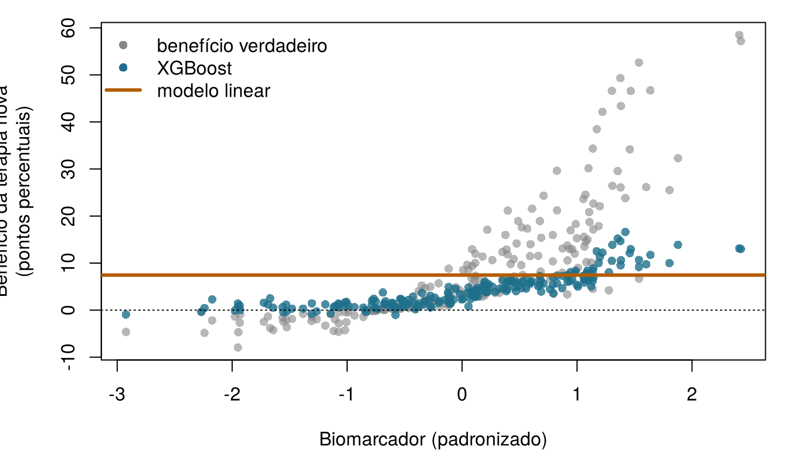
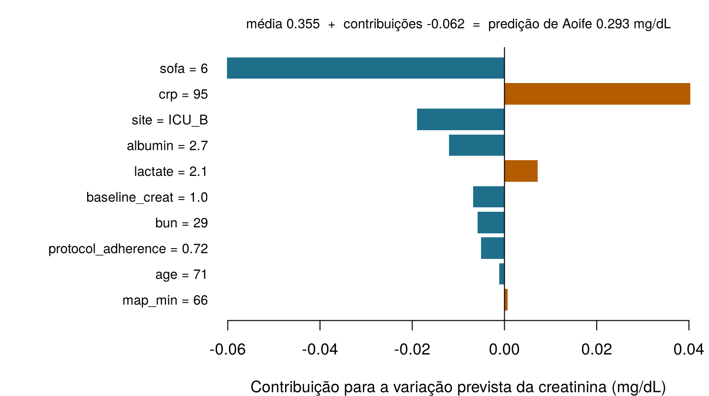

| Desfecho | Modelo | Preditores | MAE de teste | R² de teste | AUC de teste | Brier de teste |
|---|---|---|---|---|---|---|
| Variação da creatinina (mg/dL) | Regressão linear (OLS), Capítulo 4 | P10 | 0,141 | 0,656 | — | — |
| Variação da creatinina (mg/dL) | Floresta aleatória (500 árvores), Capítulo 6 | P10 | 0,153 | 0,587 | — | — |
| LRA | Regressão logística (sem penalização), o modelo principal, Capítulo 5 | P5 | — | — | 0,855 | 0,149 |
| LRA | Floresta aleatória classificadora (500 árvores), Capítulo 6 | P5 | — | — | 0,838 | 0,158 |
12 IA interpretável e explicável
Cada pergunta abaixo é sobre um modelo de predição. Ela trata do modelo inteiro, considerando todos os pacientes (global), ou da predição de um paciente (local)? Arrisque seu melhor palpite — o capítulo explica as duas coisas.
| Pergunta | Seu rótulo |
|---|---|
| Em quais atributos a floresta da UTI Ala 7 mais se apoia, considerando todos os pacientes? | |
| Por que o risco previsto de Aoife é 49 %? | |
| Em média, como muda o tempo de seguimento previsto dos pacientes com câncer de pulmão à medida que a perda de peso aumenta? | |
| O risco previsto de Aoife ficaria abaixo de 25 % se a pressão arterial dela fosse mais alta? |
Como usar este capítulo
Começando por aqui?
Este capítulo explica modelos construídos em capítulos anteriores. Em resumo:
- Modelo e predição (Definição 1.3). Um modelo \(\hat f\) transforma os atributos \(\mathbf{x}\) de um paciente em uma predição \(\hat y = \hat f(\mathbf{x})\). Ele é ajustado em um conjunto de treino e avaliado em um conjunto de teste que nunca viu (Seção 1.8, Definição 1.9).
- Coeficientes (Capítulo 4). Um modelo linear prevê \(\hat y = \beta_0 + \beta_1 x_1 + \dots + \beta_p x_p\); \(\beta_j\) é a variação da predição quando \(x_j\) aumenta uma unidade e os demais atributos ficam fixos. O lasso encolhe alguns coeficientes até exatamente zero.
- Regressão logística e razões de chances (Capítulo 5). O modelo logístico é linear na escala da log-chance; para Aoife, ele dá um risco de lesão renal aguda (LRA) de 49 %. No Capítulo 1, a equipe da UTI Ala 7 decidiu que vale a pena iniciar o pacote sempre que o risco passar de 0,25.
- Árvores, florestas aleatórias e boosting (Capítulo 6). Uma árvore prevê com uma sequência de perguntas do tipo se–senão; uma floresta faz a média de centenas de árvores cultivadas em amostras bootstrap; o boosting acrescenta pequenas árvores uma após a outra. Os ensembles preveem melhor, mas não podem ser lidos. A importância por impureza resume o quanto cada atributo ajudou nas divisões das árvores.
- Redes neurais (Capítulo 7) aprendem camadas de atributos e são os modelos menos legíveis de todos; modelos bayesianos (Capítulo 8) dão uma distribuição inteira de modelos plausíveis em vez de um só.
- Predição não é causalidade (Seção 1.10). Um atributo pode prever um desfecho sem causá-lo; na UTI Ala 7, a gravidade confunde o efeito aparente da adesão ao protocolo.
| Exemplo | Quem ou o quê | Desfecho | Rostos que você vai conhecer |
|---|---|---|---|
| 1 UTI Ala 7 | 1.250 pacientes de UTI em 4 hospitais | variação da creatinina em 48 h (lesão renal aguda se ≥ 0,3 mg/dL) | Aoife (71 anos, sepse, risco limítrofe), Tomás (54 anos, risco baixo), Priya (38 anos, risco alto); a Dra. Emma Walsh; Seán, o farmacêutico |
| 2 Ensaio ONCO-1 | 1.000 pacientes randomizados para quimioterapia ou não | redução do tumor (%) | pacientes #0042 e #0917 |
| 3 HomeBeat | 500 pessoas que usam um relógio inteligente em casa | escore de estresse, evento de deterioração | Lena |
| 4 CellWorks | 420 lotes de produção de uma terapia celular | escore de potência | lote CW-118 |
Os quatro conjuntos de dados são simulados e podem ser baixados no apêndice de dados. A apresentação completa está na Seção 1.1.
Este capítulo trata de entender o que um modelo ajustado faz. Você vai conhecer duas famílias de métodos — os que leem a estrutura do próprio modelo e os que o sondam de fora — e usá-las para responder a perguntas globais (em que o modelo se apoia, e como?) e locais (por que esta predição, e o que a mudaria?). Ele tem treze seções e um Lab, nove verificações rápidas, três widgets “Experimente”, um desafio e três missões de programação em R e Python. Reserve cerca de duas horas. Os cálculos mais pesados (florestas, boosting, BART, milhares de avaliações de modelos) foram feitos de antemão; os widgets e as missões usam seus resultados ou pequenos modelos que rodam no seu navegador.
Notação em resumo (apenas para consulta)
| Símbolo | Significado | Seção |
|---|---|---|
| \(\hat f\) | um modelo ajustado, tratado como uma função que podemos consultar | Seção 12.1 |
| \(\mathcal{L}(\hat f, D)\) | erro de \(\hat f\) nos dados \(D\) (aqui, o erro absoluto médio, MAE) | Seção 12.6 |
| \(D^{(j,m)}\) | os dados com a coluna \(j\) embaralhada pela \(m\)-ésima vez, \(m = 1, \dots, N_s\) | Seção 12.6 |
| \(\text{imp}_j\) | importância por permutação do atributo \(j\) | Seção 12.6 |
| \(\mathbf{x}_S\), \(\mathbf{x}_C\) | os atributos de interesse (conjunto \(S\)) e todos os outros (seu complemento \(C\)) | Seção 12.7 |
| \(\hat f_S(\mathbf{x}_S)\) | função de dependência parcial | Seção 12.7 |
| \(\hat f^{(i)}_S(\mathbf{x}_S)\) | curva de expectativa condicional individual (ICE) do paciente \(i\) | Seção 12.7 |
| \(H_{jk}\) | intensidade de interação de Friedman–Popescu dos atributos \(j\) e \(k\) | 1 |
| \(v(S)\), \(\phi_j\), \(\phi_0\) | valor de uma coalizão \(S\), valor de Shapley do atributo \(j\), predição de referência | Seção 12.9 |
A lista completa está na página de notação.
12.1 Por que explicar um modelo?
Nos capítulos até aqui, julgamos os modelos sobretudo pelo quanto preveem bem. Na ciência, na medicina e na regulação, a acurácia preditiva sozinha não basta. O resultado de um modelo entra em um argumento (“este paciente tem risco alto porque…”), em uma decisão (iniciar o pacote ou não) e em uma cadeia de responsabilização (quem responde se algo der errado). Por isso, seu comportamento precisa vir acompanhado de representações que as pessoas possam examinar, comparar e criticar.
Definição 12.1 (Interpretabilidade e explicabilidade) Um modelo é interpretável quando uma pessoa consegue entender como ele funciona a partir da sua estrutura: uma equação linear curta, uma árvore pequena, um escore por pontos. A explicabilidade diz respeito a métodos que constroem uma descrição separada e mais simples do comportamento de um modelo — um ranking de importância, uma curva, uma lista de contribuições para um paciente —, em geral para modelos que não são interpretáveis em si. Ambas são julgadas em relação a um público, a um contexto e a um propósito: não existe explicação adequada para todos (Doshi-Velez e Kim 2017; Lipton 2018; Molnar 2022).
A interpretabilidade é relacional: não é uma propriedade apenas de um algoritmo. Um modelo é interpretável para alguém, para alguma coisa. O que conta como explicação adequada na pesquisa metodológica pode ser diferente daquilo de que Emma precisa à beira do leito, daquilo de que o filho de Aoife precisa para confiar na equipe ou daquilo de que um órgão regulador precisa para auditar um dispositivo (Figura 12.1).
![Ilustração de uma ponte de pedra com o rótulo interpretabilidade. À esquerda, um modelo preditivo: um diagrama de rede, a equação y igual a f de X mais épsilon e uma superfície tridimensional complexa com o rótulo resultado complexo. À direita, a interpretação humana em três cenários: pesquisa científica, prática clínica e políticas públicas e regulação. A viga da ponte traz as palavras contexto, público, objetivo epistêmico, e embaixo dela há três painéis: explicação, comparação e avaliação. Mais abaixo, o letramento vai de básico a avançado, e a lógica é formada por contexto e símbolos.](images/interpretable_ai.jpg)
Ajuda ver uma explicação como um ato de comunicação. Toda explicação tem uma fonte (o modelo ajustado), uma mensagem (alguma representação dele) e um receptor (uma pessoa que a interpreta dentro do seu próprio quadro conceitual). Na teoria da comunicação de Shannon, nenhuma mensagem é transmitida sem ser codificada e decodificada (Shannon 1948). Um modelo codifica o seu conhecimento em uma forma que as pessoas não conseguem ler diretamente: centenas de árvores, milhares de pesos, uma distribuição a posteriori sobre funções. Um método de explicação recodifica parte desse conhecimento para um receptor humano. Podemos escrever isso como uma transformação \(\mathcal{T}\) que recebe um modelo ajustado \(\hat f\) e alguns dados \(D\) e devolve uma representação \(\mathcal{R}\):
\[ \mathcal{T}(\hat f, D) \longmapsto \mathcal{R}. \qquad(12.1)\]
A representação \(\mathcal{R}\) pode ser uma lista de números (escores de importância), uma curva (dependência parcial), uma matriz (intensidades de interação) ou um conjunto de contribuições para um paciente (valores de Shapley). Ela nunca reproduz o modelo inteiro; conserva alguns aspectos e descarta outros. Duas consequências atravessam todo o capítulo. Primeiro, toda explicação é uma simplificação e pode enganar se a parte descartada era justamente a que importava. Segundo, a Equação 12.1 depende de \(D\): o mesmo modelo, explicado com dados diferentes, pode contar uma história diferente.
Essa visão tem uma longa história na ciência. Os modelos não são apenas instrumentos de predição, mas também quadros de representação: uma regressão linear expressa relações por meio de coeficientes, sob pressupostos explícitos; uma regressão logística, por meio de log-odds; uma árvore, por meio de uma partição recursiva dos pacientes. Os modelos estatísticos clássicos eram escolhidos em parte porque os seus parâmetros tinham um significado direto. À medida que o aprendizado de máquina passou para florestas, boosting e redes neurais, a acurácia melhorou e esse significado direto se perdeu, de modo que a interpretação precisou de métodos próprios. Esses métodos são mais bem entendidos como operações de metamodelagem: recebem um modelo ajustado e devolvem um resumo estruturado do seu comportamento — inspecionando a sua estrutura ou perturbando as suas entradas de forma controlada —, em geral como uma figura feita para ser examinada e comparada (Molnar 2022). Projetá-los envolve sempre escolhas entre fidelidade ao modelo ajustado, robustez ao ruído amostral, custo computacional e clareza para o público a que se destinam.
Por que se dar ao trabalho? Na saúde, as explicações servem a quatro propósitos: depuração (um modelo que se apoia no identificador de um hospital, ou em um atributo registrado depois do desfecho, pode ser flagrado — as verificações do “bom demais para ser verdade?” do Capítulo 6); compreensão científica (quais fatores biológicos ou clínicos carregam o sinal?); confiança e contestabilidade (um paciente, um clínico ou um tribunal podem questionar uma recomendação); e regulação, que na Europa agora exige explicitamente resultados que os usuários consigam interpretar e supervisão humana dos sistemas de alto risco. A Seção 12.2 examina cada um desses usos, a começar pela lei.
Há também um argumento forte contra confiar em explicações feitas depois do fato. Quando o que está em jogo é muito, argumenta Rudin (2019), devemos preferir modelos interpretáveis por concepção — escores curtos, modelos lineares esparsos, árvores pequenas — sempre que eles preverem mais ou menos tão bem, em vez de construir uma caixa-preta e depois explicá-la com um segundo modelo aproximado. Guarde esse argumento: na UTI Ala 7, os modelos legíveis são pelo menos tão acurados quanto as florestas (Tabela 12.1). Para a variação da creatinina, a regressão linear (OLS) do Capítulo 4 continua com o menor MAE de teste dos dois, 0,141 mg/dL contra 0,153 da floresta aleatória do Capítulo 6; para a LRA, o modelo logístico do Capítulo 5 tem uma AUC um pouco maior que a floresta de classificação. Ambos podem ser lidos diretamente.
A mesma floresta da UTI Ala 7 é explicada a três públicos: um cientista de dados, Emma e o filho de Aoife. Qual afirmação combina com a ideia de que a interpretabilidade é relacional?
12.2 Por que as explicações importam: regulação e outros usos
Olhe de novo a Figura 12.1. Na margem direita estão três cenários — pesquisa científica, prática clínica, e políticas públicas e regulação —, e cada um envia um pedido diferente através da ponte. Um regulador quer evidências de que um dispositivo é seguro e de que os seus usuários conseguem supervisioná-lo; um clínico quer saber se o número desta noite faz sentido para este paciente; um cientista quer saber o que o modelo aprendeu sobre a doença. Começamos pela lei, porque na Europa a lei agora diz algo explícito sobre explicações, e depois passamos aos outros usos.
12.2.1 O que a lei exige
O Regulamento de IA. Um software que fornece informações usadas para tomar decisões diagnósticas ou terapêuticas é um dispositivo médico de classe IIa, no mínimo, pela regra de classificação 11 do Regulamento de Dispositivos Médicos da UE (MDR), e por isso precisa da avaliação de um organismo notificado (European Parliament and Council of the European Union 2017, Annex VIII, Rule 11). O Regulamento de IA classifica como de alto risco qualquer sistema de IA que seja um produto, ou um componente de segurança de um produto, abrangido pelas leis listadas no seu Anexo I — entre elas o MDR e o regulamento dos dispositivos médicos para diagnóstico in vitro — quando esse produto precisa dessa avaliação por terceiros (European Parliament and Council of the European Union 2024, Article 6(1) and Annex I). A maioria dos modelos de predição clínica colocados no mercado, inclusive um escore de risco de LRA como o da tela de Aoife, é portanto um sistema de IA de alto risco (o Capítulo 18 percorre a classificação). Três artigos do Regulamento tratam diretamente de explicações.
- Artigo 13, transparência e prestação de informações aos responsáveis pela implantação. Um sistema de alto risco deve ser concebido de modo que o seu funcionamento seja “suficientemente transparente para permitir que os responsáveis pela implantação interpretem o resultado do sistema e o utilizem adequadamente”. As suas instruções de uso devem indicar as suas capacidades e limitações e, quando aplicável, as características técnicas que permitem “fornecer informações pertinentes para explicar o seu resultado” (European Parliament and Council of the European Union 2024, Article 13(1) and 13(3)(b)(iv)). O responsável pela implantação é o hospital; quem interpreta são Emma e Seán.
- Artigo 14, supervisão humana. As pessoas que supervisionam o sistema devem conseguir compreender as suas capacidades e limitações, manter-se conscientes da tendência a confiar demais no seu resultado (o viés de automação), interpretar corretamente o resultado, tendo em conta as ferramentas e os métodos de interpretação disponíveis, e desconsiderá-lo, anulá-lo ou interromper o sistema (European Parliament and Council of the European Union 2024, Article 14(4)). Os métodos de explicação aparecem como um apoio à supervisão, não como um substituto dela.
- Artigo 86, direito à explicação de decisões individuais. Uma pessoa afetada por uma decisão que o responsável pela implantação tomou com base no resultado de um sistema de alto risco, e que produz efeitos jurídicos ou a afeta de modo igualmente significativo, com um impacto que ela considera adverso na sua saúde, na sua segurança ou nos seus direitos fundamentais, tem direito a obter dele “explicações claras e pertinentes sobre o papel do sistema de IA no procedimento de tomada de decisão e sobre os principais elementos da decisão tomada” (European Parliament and Council of the European Union 2024, Article 86(1)). Leia o alcance com atenção: o artigo cobre os usos de alto risco listados no Anexo III — por exemplo, sistemas que decidem a elegibilidade para serviços públicos de saúde ou fazem a triagem de pacientes de emergência —, e não os dispositivos médicos que são de alto risco pelo Anexo I. A pergunta do filho de Aoife é justa, mas quem a responde são a boa prática clínica e as informações exigidas pelos artigos 13 e 14, não o artigo 86.
Nenhum desses artigos indica um método. O Regulamento pede um resultado — saídas que os usuários consigam interpretar e supervisionar — e deixa os meios a cargo do fornecedor. As suas obrigações se aplicam por etapas (European Parliament and Council of the European Union 2024, Article 113).
Proteção de dados. O RGPD dá a todos o direito de “não ficar sujeito a nenhuma decisão tomada exclusivamente com base no tratamento automatizado, incluindo a definição de perfis”, que produza efeitos jurídicos ou que afete a pessoa de forma igualmente significativa; quando essas decisões são permitidas, as salvaguardas incluem pelo menos o direito de obter intervenção humana, de manifestar o seu ponto de vista e de contestar a decisão (European Parliament and Council of the European Union 2016, Article 22(1) and 22(3)). O considerando 71 acrescenta o direito de “obter uma explicação sobre a decisão tomada na sequência dessa avaliação”, e os artigos 13 a 15 exigem “informações úteis relativas à lógica subjacente”. Os considerandos não são vinculantes por si sós, e os juristas divergem sobre até que ponto essas disposições equivalem a um direito à explicação de uma decisão individual (Wachter, Mittelstadt, e Floridi 2017). Um escore de risco que Emma lê e pondera não é uma decisão tomada “exclusivamente” por tratamento automatizado — mais um motivo para que o humano no ciclo seja real.
Dispositivos médicos. O MDR não menciona a explicabilidade como tal, mas chega ao mesmo ponto por outros caminhos. O fabricante deve demonstrar que o dispositivo cumpre os requisitos gerais de segurança e desempenho, inclusive os relativos a software (Anexo I, seção 17), por meio de uma avaliação clínica (artigo 61 e Anexo XIV); descrever o seu projeto, finalidade prevista, desempenho e riscos na documentação técnica (Anexo II); e dar aos usuários informações sobre a utilização prevista, o desempenho e as limitações (Anexo I, seção 23) (European Parliament and Council of the European Union 2017). Um organismo notificado que avalie uma floresta para LRA vai querer saber em que ela se apoia, se isso é clinicamente plausível e em quais pacientes ela falha: as perguntas deste capítulo.
Orientações internacionais. A Food and Drug Administration dos EUA, a Health Canada e a MHRA do Reino Unido publicaram em 2021 dez princípios de Boas Práticas de Aprendizado de Máquina para o desenvolvimento de dispositivos médicos (Good Machine Learning Practice); dois deles dizem que o foco está no desempenho da equipe humano–IA e que os usuários recebem informações claras e essenciais (U.S. Food and Drug Administration, Health Canada, e Medicines and Healthcare products Regulatory Agency 2021). Os seus princípios de 2024 sobre transparência a definem como o grau em que informações apropriadas sobre um dispositivo — finalidade prevista, desenvolvimento, desempenho e, quando disponível, a sua lógica — são comunicadas com clareza aos públicos relevantes, e tratam a explicabilidade como o grau em que essa lógica pode ser explicada a uma pessoa (U.S. Food and Drug Administration, Health Canada, e Medicines and Healthcare products Regulatory Agency 2024). Para os medicamentos, o documento de reflexão da Agência Europeia de Medicamentos (EMA) sobre IA no ciclo de vida dos medicamentos (2024) prefere modelos transparentes; aceita modelos de caixa-preta quando os desenvolvedores demonstram que os transparentes têm desempenho ou robustez insatisfatórios, mas espera então uma justificativa documentada, o uso de métodos de explicabilidade sempre que possível e a discussão dessas aplicações com a agência, por meio de qualificação ou aconselhamento científico (European Medicines Agency 2024).
12.2.2 Outros usos das explicações
- Adoção clínica e confiança. Pede-se aos clínicos que ajam com base no resultado de um modelo e que respondam pela decisão. Uma explicação que lhes permite confrontar o resultado com o que sabem do paciente — o SOFA de Aoife abaixo da média, por exemplo (Seção 12.9) — sustenta a confiança onde ela é merecida; uma explicação que apenas parece plausível pode dar uma falsa segurança (Ghassemi, Oakden-Rayner, e Beam 2021).
- Depuração, vazamento e atalhos. O uso mais prático de todos. No Capítulo 3, os genes 08, 14 e 19 do ONCO-1 revelaram-se cópias do desfecho; a floresta do Capítulo 6 os colocou no topo do seu ranking de importância (Seção 12.6), e é assim que um vazamento desses é percebido. Os modelos de imagem fazem o mesmo com atalhos: redes treinadas com radiografias de tórax aprenderam as marcações do hospital ou a forma como a imagem foi feita, em vez dos pulmões, e os métodos de explicação ajudaram a revelá-lo (Zech et al. 2018; DeGrave, Janizek, e Lee 2021; Geirhos et al. 2020).
- Auditorias de equidade. As explicações ajudam a perguntar por que um modelo tem desempenho diferente entre grupos. Um algoritmo muito usado nos EUA previa os custos de saúde como substituto das necessidades de saúde; como se gastava menos com pacientes negros com as mesmas necessidades, ele subestimava sistematicamente o quanto estavam doentes (Obermeyer et al. 2019). Verificar em que um modelo se apoia — aqui, a própria escolha do desfecho — faz parte de qualquer auditoria de equidade.
- Descoberta científica. As medidas de interação e as curvas ICE podem apontar efeitos que valem ser testados, como o benefício de uma terapia que cresce com um biomarcador na
- Elas geram hipóteses; confirmá-las exige estudos planejados (Capítulo 13).
- Desenvolvimento e fabricação de medicamentos. Os modelos hoje triam compostos, selecionam pacientes para ensaios e monitoram a produção. Sob as boas práticas de fabricação (BPF, ou GMP em inglês), toda decisão de liberação precisa ser justificada e documentada. Se a CellWorks usasse um modelo para sinalizar lotes como o CW-118 antes da liberação, a equipe da qualidade precisaria ver quais medidas do processo motivaram o alerta, verificar se fazem sentido e registrá-lo. O projeto de Anexo 22 das BPF da UE sobre inteligência artificial, publicado pela Comissão Europeia (2025), propõe exatamente isso para aplicações críticas: registrar quais atributos contribuíram para cada classificação durante os testes, registrar a confiança do modelo e fazer especialistas avaliarem se o modelo se apoia nos atributos adequados (European Commission 2025).
- Ciência regulatória. Agências reguladoras e escritórios de registro também usam modelos interpretáveis. Na avaliação de risco de agrotóxicos, o aprendizado de máquina interpretável aplicado a uma base ampliada de estudos de absorção dérmica humana in vitro identificou os principais preditores da absorção e embasou os valores-padrão usados quando não há estudo disponível (D. Sarti et al. 2025). Escritórios de registro de cultivares usaram florestas aleatórias e modelos bayesianos aditivos para mostrar aos requerentes quais efeitos de genótipo por ambiente determinam a produtividade e a qualidade nos ensaios oficiais (D. A. Sarti et al. 2025).
| Público | Pergunta típica | Explicação útil | Neste capítulo |
|---|---|---|---|
| Paciente ou família (o filho de Aoife) | Por que este número para mim, e o que acontece agora? | Uma explicação local em linguagem simples e o plano de cuidado | As contribuições de Aoife para as suas log-odds (Seção 12.9) |
| Clínico (Emma) | Este resultado faz sentido para este paciente? Quando devo desconsiderá-lo? | Contribuições locais confrontadas com o prontuário; limitações conhecidas | Valores de Shapley; a análise “e se” e as suas ressalvas (Seção 12.10) |
| Desenvolvedor ou auditor (Seán, o comitê de governança de IA) | Em que o modelo se apoia? Há algum vazamento? Ele é estável? | Importância global em dados separados, PDP e ICE, interações, incerteza | Importância por permutação, o vazamento do ONCO-1, VIVID, VSUP |
| Regulador ou organismo notificado | É seguro e eficaz para a sua finalidade prevista, e os usuários conseguem supervisioná-lo? | Finalidade prevista, dados, desempenho por subgrupo, limitações e projeto para supervisão, documentados | O checklist da Seção 12.12 |
| Cientista | O que o modelo aprendeu sobre a doença ou o processo? | Interações e formas dos efeitos com a sua incerteza, lidas como hipóteses | Terapia × biomarcador (Figura 12.6); BART e bartMan (Seção 12.11) |
Um hospital compra uma ferramenta de IA com marcação CE, de classe IIa, que ordena os pacientes da UTI pelo seu risco de LRA. Qual afirmação sobre o Regulamento de IA está correta?
12.3 Um mapa dos métodos
Os métodos de explicação costumam ser organizados ao longo de três eixos. O primeiro, que a primeira edição deste livro usou para organizar todo o capítulo, é o que o método examina (Figura 12.2).

Definição 12.2 (Específico e agnóstico ao modelo; global e local; intrínseco e post hoc) Um método específico do modelo (dependente do modelo, ou embutido) usa a estrutura interna de um tipo de modelo — os coeficientes de um modelo linear, as divisões de uma árvore, as contagens de divisões de uma floresta: examina componentes estruturais. Um método agnóstico ao modelo precisa apenas da possibilidade de consultar o modelo — fornecer entradas, ler suas predições —, então funciona para qualquer modelo: examina o comportamento funcional. Uma explicação global descreve o comportamento do modelo em uma população inteira; uma explicação local descreve uma predição para um indivíduo. Uma explicação intrínseca vem de um modelo interpretável por concepção (uma equação linear curta, uma árvore pequena, um escore de pontos), de modo que o modelo é a sua própria explicação; uma explicação post hoc é construída depois do ajuste, como uma descrição separada de um modelo que não pode ser lido diretamente (Molnar 2022; Lipton 2018).
Os métodos específicos são rápidos e fiéis, porque leem o próprio modelo, mas cada um só funciona para a sua classe de modelos. Os métodos agnósticos permitem comparar modelos muito diferentes com as mesmas ferramentas, ao preço de muitas avaliações do modelo e de uma dependência dos dados usados para sondá-lo — sobretudo quando os atributos são correlacionados (Hooker, Mentch, e Zhou 2021).
Os três eixos são independentes. A importância por impureza é específica do modelo, post hoc e global; os valores de Shapley são agnósticos ao modelo, post hoc e locais; os coeficientes do modelo logístico do Capítulo 5 são específicos do modelo e intrínsecos, e dão tanto uma explicação global quanto (Seção 12.9) uma local. As representações que eles produzem também diferem na forma: números (escores de importância), objetos estruturados (uma matriz de interações), funções (curvas de dependência parcial) ou objetos geométricos (uma rede de interações, uma árvore desenhada como diagrama). A Tabela 12.3 situa no mapa os métodos deste capítulo.
| Método | Específico ou agnóstico | Intrínseco ou post hoc | Global ou local | Pergunta que responde | Seção |
|---|---|---|---|---|---|
| Coeficientes, razões de chances | específico (linear, logístico) | intrínseco | ambos | Quanto muda a predição por unidade de cada atributo? | Seção 12.5 |
| Regras de árvore | específico (árvore única) | intrínseco | ambos | Quais perguntas levam a esta predição? | Seção 12.5 |
| Importância por impureza, ganho | específico (ensembles de árvores) | post hoc | global | Em quais atributos as árvores fizeram as divisões mais úteis? | Seção 12.5 |
| Importância por permutação | agnóstico | post hoc | global | Quanto o modelo piora sem a informação deste atributo? | Seção 12.6 |
| Dependência parcial (PDP) | agnóstico | post hoc | global | Como muda a predição média quando um atributo varia? | Seção 12.7 |
| Curvas ICE | agnóstico | post hoc | local (uma curva por paciente) | O efeito é diferente entre os pacientes? | Seção 12.7 |
Estatística H, VIVID (pacote vivid) |
agnóstico | post hoc | global | Quais atributos atuam em conjunto, e não de forma aditiva? | 1 |
| Valores de Shapley | agnóstico | post hoc | local (e global, quando se faz a média) | Quanto cada atributo afastou esta predição da média? | Seção 12.9 |
| Explicação contrafactual | agnóstico | post hoc | local | Qual é a menor mudança que alteraria a predição? | Seção 12.10 |
Proporções de inclusão do BART (pacote bartMan) |
específico (BART) | post hoc | global | Com que frequência as árvores a posteriori dividem em cada atributo, ou em dois atributos ao longo de um ramo? | Seção 12.11 |
| Paleta de incerteza que suprime valores (VSUP) | exibição de qualquer um dos anteriores | — | global | Quais partes de uma explicação são ao mesmo tempo grandes e confiáveis? | Seção 12.11 |
12.4 Um ambulatório de câncer de pulmão, e um alerta sobre o tempo
Para comparar muitos modelos com as mesmas ferramentas, precisamos de um conjunto de dados pequeno. Além da UTI Ala 7, usamos um de um ambulatório de seguimento oncológico. Ele é simulado (não descreve nenhum paciente real), inspirado em um conjunto de dados bem conhecido de pacientes com câncer de pulmão avançado (Loprinzi et al. 1994), e pequeno o bastante para milhares de avaliações de modelos: 228 pacientes, cinco preditores e um desfecho (veja o apêndice de dados).
age(idade, em anos) esex(sexo);ph.ecog: o estado de desempenho ECOG (performance status) avaliado pelo médico, de 0 (totalmente ativo) a 3 (na cama ou na cadeira mais da metade do dia) (Oken et al. 1982);ph.karno: o escore de Karnofsky, outra medida da mesma coisa avaliada pelo médico, em uma escala de 0 a 100, em que 100 é a atividade normal (Karnofsky e Burchenal 1949);wt.loss: peso perdido nos seis meses anteriores (kg);time: dias de seguimento, estatus: se o paciente havia morrido (dead) ou ainda estava vivo (alive) quando o seguimento terminou.
| patient_id | age | sex | ph.ecog | ph.karno | wt.loss | time | status |
|---|---|---|---|---|---|---|---|
| 1 | 68 | female | 3 | 46 | 11.3 | 30 | alive |
| 2 | 53 | female | 2 | 68 | 11.6 | 30 | dead |
| 3 | 64 | female | 1 | 80 | 6.3 | 133 | alive |
| 4 | 62 | female | 1 | 100 | 15.1 | 171 | alive |
| 5 | 57 | male | 1 | 80 | 24.3 | 30 | dead |
| 6 | 40 | female | 1 | 86 | 4.6 | 192 | alive |
Seguindo a primeira edição deste livro, prevemos time a partir dos cinco preditores com os modelos da Parte II, ajustados em 171 pacientes de treino e testados nos outros 57 (Tabela 12.5).
| Modelo | RMSE de teste (dias) | MAE de teste (dias) |
|---|---|---|
| Média (sem modelo) | 117.81 | 102.90 |
| Regressão linear | 52.65 | 43.68 |
| Lasso | 53.30 | 45.01 |
| Árvore (profundidade 4, escolhida por VC) | 45.37 | 33.22 |
| Floresta aleatória | 39.67 | 30.76 |
| XGBoost | 40.92 | 32.41 |
| Rede neural (2 camadas ocultas) | 43.34 | 32.71 |
Os modelos flexíveis — a floresta, o boosting, a rede e até uma árvore única — superam claramente os modelos lineares (MAE de teste de cerca de 31 dias para a floresta, contra 44 para a regressão linear). O motivo está visível nos dados: nenhum paciente tem time abaixo de 30 dias (68 pacientes têm exatamente 30), então a relação tem um piso que nenhuma reta consegue acompanhar. Para confiar em qualquer explicação desses modelos, porém, precisamos primeiro ser honestos sobre o que é time.
time não é tempo de sobrevida
Dos 228 pacientes, 135 (59 %) estavam vivos quando o seguimento terminou. Para eles, time diz apenas que sobreviveram pelo menos esse tempo: o tempo de sobrevida deles é censurado. Tratar time como um número comum a ser previsto, como fazemos aqui, conta um paciente visto vivo pela última vez no dia 192 exatamente como um paciente que morreu no dia 192 e, assim, subestima a sobrevida — mais ainda nos pacientes em boas condições, que são os mais propensos a ser censurados. O que os modelos a seguir preveem, portanto, são dias de seguimento registrado, e não sobrevida.
Mantemos essa simplificação porque o conjunto de dados é pequeno e completo e nos permite comparar muitos modelos com as mesmas ferramentas de explicação, que é o objetivo deste capítulo. Para um prognóstico real, você usaria métodos feitos para desfechos censurados, como o modelo de Cox (Cox 1972) ou as florestas aleatórias de sobrevida (Ishwaran et al. 2008), e os métodos de explicação deste capítulo se aplicam a eles da mesma forma. Uma boa explicação de um modelo do desfecho errado continua sendo uma explicação do desfecho errado.
No ambulatório de pulmão, a importância por permutação (abaixo) diz que a floresta se apoia fortemente no estado de desempenho ECOG. Sabendo que time é censurado para a maioria dos pacientes, o que você pode concluir com segurança?
12.5 Lendo o próprio modelo
12.5.1 Coeficientes
A interpretação específica do modelo é mais transparente nos modelos lineares, em que toda a estrutura ajustada é uma lista de coeficientes. A Tabela 12.6 mostra a regressão linear de time sobre os cinco preditores no ambulatório de pulmão, com cada coeficiente também expresso por desvio padrão do seu atributo, para que atributos medidos em unidades diferentes possam ser comparados.
| Atributo | Coeficiente | EP | Por DP | Sem Karnofsky | |
|---|---|---|---|---|---|
| age | Idade (por ano) | -0,22 | 0,42 | -2,0 | -0,21 |
| male | Sexo masculino | -9,46 | 7,80 | -4,7 | -11,67 |
| ph.ecog | ECOG (por nível) | -72,17 | 9,54 | -67,1 | -100,37 |
| ph.karno | Karnofsky (por ponto) | 1,71 | 0,52 | 28,8 | — |
| wt.loss | Perda de peso (por kg) | -7,68 | 0,79 | -38,8 | -7,37 |
Um estado de desempenho pior (ECOG mais alto) e mais perda de peso andam junto com um seguimento mais curto; um escore de Karnofsky melhor anda junto com um seguimento mais longo; idade e sexo acrescentam pouco. Até aqui, tudo legível. Mas olhe a coluna da direita: quando o escore de Karnofsky é removido, o coeficiente do ECOG muda de -72,2 para -100,4 dias por nível. O motivo é que ECOG e Karnofsky medem quase a mesma coisa (a correlação entre eles é -0,89). Com os dois no modelo, cada coeficiente responde a uma pergunta estranha — e se o ECOG piorasse enquanto o escore de Karnofsky continuasse igual? — sobre uma combinação de valores que quase não existe. Um coeficiente é sempre interpretado mantendo fixos os demais atributos, e o seu significado muda quando os demais atributos mudam. Os modelos penalizados tornam a instabilidade visível: o lasso do Capítulo 4 pode manter um de dois atributos correlacionados e descartar o outro, quase por acaso.
Na UTI Ala 7, o modelo logístico do Capítulo 5 é o modelo que Emma já usa. Suas razões de chances — 1,50 por ponto de SOFA (Vincent et al. 1996), 1,35 por mmol/L de lactato, 0,96 por mmHg da menor pressão arterial média (PAM) — são uma descrição completa e global do modelo. Veremos na Seção 12.9 que, para um modelo linear ou logístico, elas também dão uma explicação local exata do risco de Aoife, sem custo adicional.
12.5.2 Regras de árvore
Uma árvore única é a sua própria explicação: uma sequência de regras do tipo se–senão que pode ser seguida com o dedo (Figura 12.3).

A primeira divisão é pelo estado de desempenho ECOG, e as seguintes refinam a predição de novo com o ECOG e com a perda de peso. O escore de Karnofsky nem aparece — não porque não importe, mas porque o ECOG já carrega quase a mesma informação. As variáveis que aparecem cedo muitas vezes importam muito para a árvore, mas a posição de uma divisão não é uma medida de importância: um atributo que nunca aparece na raiz ainda pode ser usado em muitas divisões mais abaixo, e um atributo correlacionado pode tomar o lugar de outro se os dados mudarem um pouco (a instabilidade do Capítulo 6).
12.5.3 Importância embutida dos ensembles
Florestas e modelos de boosting não podem ser lidos, mas guardam um registro da sua própria construção. A importância por impureza de uma floresta soma, em todas as árvores, o quanto as divisões em cada atributo reduziram o erro; o XGBoost (Chen e Guestrin 2016) relata a mesma ideia como ganho (gain). Na UTI Ala 7 (Tabela 12.7), ambas colocam o SOFA em primeiro lugar e a ureia nitrogenada sanguínea (BUN) em segundo.
| Atributo | Floresta: importância por impureza | XGBoost: proporção do ganho |
|---|---|---|
| sofa | 0.2562 | 0.3400 |
| bun | 0.1381 | 0.1041 |
| baseline_creat | 0.1106 | 0.0924 |
| map_min | 0.1014 | 0.0678 |
| protocol_adherence | 0.0913 | 0.0551 |
| crp | 0.0847 | 0.0608 |
| albumin | 0.0809 | 0.0575 |
| lactate | 0.0583 | 0.0436 |
Essas importâncias embutidas são rápidas e úteis para uma triagem, mas têm três fraquezas conhecidas. São calculadas nos dados de treino, então recompensam atributos que o modelo usou para ajustar ruído; favorecem atributos com muitos pontos de divisão possíveis (atributos contínuos em vez de binários) (Strobl et al. 2007); e não dizem nada sobre a direção: um valor grande não informa se mais do atributo aumenta ou diminui a predição. Guarde a BUN na memória: veremos que a sua posição alta é em grande parte emprestada dos atributos com os quais ela está correlacionada.
No ambulatório de pulmão, remover o escore de Karnofsky do modelo linear muda muito o coeficiente do estado de desempenho ECOG. Qual é a melhor explicação?
12.6 Importância por permutação
Passamos agora aos métodos agnósticos ao modelo, que tratam o modelo como uma caixa-preta. O primeiro é a ideia mais simples do capítulo: se o modelo se apoia em um atributo, embaralhar esse atributo deve piorar as suas predições. Embaralhar uma coluna — trocar seus valores de lugar ao acaso entre os pacientes — preserva a distribuição do atributo, mas rompe a sua ligação com o desfecho e com os outros atributos. A ideia remonta às florestas aleatórias de Breiman (2001) e foi generalizada para qualquer modelo por Fisher, Rudin, e Dominici (2019).
Definição 12.3 (Importância por permutação) Seja \(\mathcal{L}(\hat f, D)\) o erro de um modelo ajustado \(\hat f\) em um conjunto de dados \(D\) (por exemplo, o erro absoluto médio no conjunto de teste), e seja \(D^{(j,m)}\) uma cópia de \(D\) em que a coluna do atributo \(j\) foi embaralhada ao acaso, na \(m\)-ésima de \(N_s\) vezes. A importância por permutação do atributo \(j\) é o aumento médio do erro:
\[ \text{imp}_j = \frac{1}{N_s} \sum_{m=1}^{N_s} \mathcal{L}\big(\hat f, D^{(j,m)}\big) - \mathcal{L}\big(\hat f, D\big). \qquad(12.2)\]
Um valor positivo grande significa que o modelo se apoia no atributo \(j\); um valor próximo de zero significa que não. Para uma métrica em que mais alto é melhor (acurácia, AUC), a ordem dos dois termos se inverte, de modo que a importância volta a ser métrica original menos métrica embaralhada.
Repare na ordem da Equação 12.2: embaralhado menos original. Para um erro, embaralhar piora as coisas, então o erro sobe e a importância é positiva. Um pequeno valor negativo aparece por acaso quando um atributo é inútil (um embaralhamento de sorte pode sair um pouco melhor que o original); ele significa “nenhuma evidência de que o modelo se apoie neste atributo”, e não “prejudicial”. Como cada embaralhamento é aleatório, nós o repetimos \(N_s\) vezes e olhamos a dispersão, além da média.
Embaralhe você mesmo um atributo. Abaixo estão os 250 pacientes de teste da UTI Ala 7 e dois modelos de capítulos anteriores, ambos prevendo a variação da creatinina em 48 horas a partir dos mesmos dez preditores: a floresta aleatória do Capítulo 6 (MAE de teste 0,153 mg/dL) e a regressão linear (OLS) do Capítulo 4 (0,141 mg/dL). Escolha um atributo e clique em Embaralhar uma vez: a coluna dele é embaralhada e o MAE de teste do modelo é recalculado. Cada ponto é um embaralhamento; a barra é o aumento médio nos embaralhamentos feitos até agora. (Os 30 embaralhamentos de cada atributo foram calculados de antemão com scripts/precompute/ch12_explain.py; o botão os revela um de cada vez.) Meta: embaralhar pelo menos quatro atributos diferentes e depois comparar os dois modelos.
Duas coisas chamam a atenção. Primeiro, o SOFA domina nos dois modelos, seguido pela creatinina basal e pela PAM mínima — a mesma fisiologia vista através de dois modelos muito diferentes. Segundo, procure a BUN: a importância por impureza da floresta a colocava em segundo lugar (Tabela 12.7), mas, quando ela é embaralhada no conjunto de teste, o erro da floresta sobe muito menos do que com o SOFA, e menos do que com a creatinina basal ou a PAM, e o modelo linear mal percebe. A BUN é correlacionada com o SOFA (r = 0,53) e com a creatinina basal (r = 0,36); as árvores muitas vezes fazem divisões nela como substituta desses atributos, o que lhe rende crédito de impureza durante o treino, mas a sua informação está quase toda disponível em outros lugares. A importância por permutação em dados novos é a medida mais honesta daquilo de que o modelo precisa.
A importância por permutação também pode flagrar um vazamento. Quando a floresta do Capítulo 6 foi treinada com todos os atributos do ONCO-1, seus três atributos mais importantes foram os genes 08, 19 e 14 — justamente os genes que, por construção, são cópias do desfecho (Tabela 12.8). Uma explicação que coloca um atributo implausível no topo costuma ser o primeiro sinal de que há algo errado com os dados, e não de que se fez uma descoberta.
| Atributo | Importância por impureza |
|---|---|
| gene_08 | 0.2163 |
| gene_19 | 0.2141 |
| gene_14 | 0.1822 |
| dose_intensity | 0.1171 |
| treatment_no_chemo | 0.0969 |
No ambulatório de pulmão, os três modelos concordam em linhas gerais (Tabela 12.9): o ECOG em primeiro lugar, depois o escore de Karnofsky e a perda de peso (numa ordem que muda de um modelo para outro), com idade e sexo desprezíveis.
| Atributo | Regressão linear | Floresta aleatória | XGBoost |
|---|---|---|---|
| Idade | 0,2 (0,2) | -0,1 (0,5) | -1,2 (0,6) |
| Sexo masculino | 0,1 (0,7) | 0,1 (0,4) | 0,1 (0,4) |
| ECOG | 39,5 (5,9) | 41,4 (5,2) | 45,7 (5,8) |
| Karnofsky | 13,5 (3,1) | 26,0 (4,2) | 17,2 (3,3) |
| Perda de peso | 19,3 (4,3) | 21,7 (3,4) | 23,1 (3,9) |
A importância por permutação é fácil de calcular e de explicar, mas tem armadilhas que importam em dados clínicos.
- Atributos correlacionados dividem o crédito, ou o perdem. Embaralhar o ECOG deixando o escore de Karnofsky intocado cria pacientes que são “totalmente ativos” por um escore e “incapacitados” pelo outro. O modelo é então consultado sobre combinações que nunca viu, e o seu comportamento ali é arbitrário (Hooker, Mentch, e Zhou 2021). Além disso, se o modelo consegue obter a informação do ECOG a partir do Karnofsky, a importância de cada um pode parecer menor que a importância do par. Embaralhe atributos correlacionados juntos (como fizemos com os quatro hospitais da UTI Ala 7, embaralhados como um único atributo) ou relate-os como um grupo.
- Ela mede o quanto o modelo depende do atributo, não o valor do atributo na realidade. Um atributo que um modelo ignora pode ser essencial para um modelo igualmente acurado que o usa no lugar de um parceiro correlacionado. Fisher, Rudin, e Dominici (2019) propõem olhar para o conjunto inteiro de bons modelos (o conjunto Rashomon) e relatar a faixa de importância entre eles.
- Dados de teste, não de treino. Calculada no conjunto de treino, a importância por permutação recompensa atributos que o modelo usou para memorizar ruído, tal como a importância por impureza.
- Ela não é causal. Uma importância grande diz que as predições do modelo dependem do atributo; não diz que mudar o atributo em um paciente mudaria o desfecho.
Um colega calcula a importância por permutação de um classificador usando a AUC (em que mais alto é melhor) e descobre que embaralhar o lactato muda a AUC de 0,84 para 0,78. Outro atributo, a idade, dá uma AUC de 0,845 depois de embaralhado. Qual leitura está certa?
Importância por permutação à mão. A regressão linear (OLS) do Capítulo 4 para a variação da creatinina, com os seus dez preditores, foi ajustada nos pacientes de treino da UTI Ala 7, e o seu MAE de teste (0,141 mg/dL, como no Capítulo 4) está guardado em mae_orig. Embaralhe a coluna do SOFA em uma cópia do conjunto de teste, recalcule o MAE e calcule a importância por permutação do SOFA (embaralhado menos original). Preencha a lacuna com o código que embaralha a coluna.
sample(x) devolve os elementos de x em ordem aleatória.
test_perm$sofa <- sample(test_perm$sofa)rng.permutation(array) devolve uma cópia embaralhada do array; use test_perm["sofa"].to_numpy().
test_perm["sofa"] = rng.permutation(test_perm["sofa"].to_numpy())R e Python usam geradores de números aleatórios diferentes, então embaralham de forma diferente e dão números diferentes (cerca de 0,06 no R e 0,05 no Python). Um embaralhamento dá um número ruidoso; na prática, você o repete de 10 a 50 vezes e relata a média e a dispersão, como fez o widget. O Lab encapsula isso em uma função que funciona para qualquer modelo.
12.7 Dependência parcial e curvas ICE
A importância nos diz quais atributos importam, não como. O tempo de seguimento previsto cai de forma constante com a perda de peso, ou só a partir de certo limiar? Ele cai do mesmo modo para todos os pacientes? Duas ferramentas relacionadas respondem a essas perguntas consultando o modelo em cópias modificadas dos dados.
Divida os atributos entre os de interesse, \(\mathbf{x}_S\) (muitas vezes, um único atributo), e todos os outros, \(\mathbf{x}_C\) (o complemento). Agora pegue cada paciente dos dados, mantenha os seus próprios valores de \(\mathbf{x}_C\), fixe \(\mathbf{x}_S\) em um valor escolhido e peça uma predição ao modelo.
Definição 12.4 (Dependência parcial e expectativa condicional individual) A curva de expectativa condicional individual (ICE, do inglês individual conditional expectation) do paciente \(i\) mostra como a predição do modelo para esse paciente mudaria se apenas \(\mathbf{x}_S\) mudasse: \[ \hat f^{(i)}_S(\mathbf{x}_S) = \hat f(\mathbf{x}_S, \mathbf{x}_{C,i}). \] A função de dependência parcial é a média das curvas ICE nos \(n\) pacientes: \[ \hat f_S(\mathbf{x}_S) = \frac{1}{n} \sum_{i=1}^{n} \hat f(\mathbf{x}_S, \mathbf{x}_{C,i}). \qquad(12.3)\] Traçadas sobre uma grade de valores de \(\mathbf{x}_S\), elas dão as curvas ICE e o gráfico de dependência parcial (PDP, do inglês partial dependence plot) (Friedman 2001; Goldstein et al. 2015).
O PDP é uma visão em nível de população: mostra se o modelo aprendeu, em média, uma relação aproximadamente linear, do tipo limiar ou mais complexa. As curvas ICE mostram a heterogeneidade: quando são mais ou menos paralelas, o atributo tem o mesmo efeito para todos e o PDP é um resumo justo; quando se abrem em leque ou se cruzam, o efeito depende dos outros atributos do paciente — uma interação, que a média esconde. Curvas que começam em alturas diferentes são difíceis de comparar, por isso ajuda centralizá-las: subtrair de cada curva o seu valor na extremidade esquerda da grade, para que todas comecem em zero e mostrem apenas a variação (Goldstein et al. 2015).
Explore os modelos do ambulatório de pulmão. Cada linha fina é um dos 171 pacientes de treino: os dias de seguimento previstos pelo modelo quando um atributo varia e todo o resto do paciente continua como está (uma curva ICE). A linha grossa é a média delas (o PDP). Os pontos ao longo da base mostram os valores realmente observados. Escolha um modelo e um atributo, destaque um paciente e experimente a visão centralizada. Meta: ativar as curvas centralizadas para a perda de peso em um dos modelos de árvores e comparar com o modelo linear.
Os três modelos concordam na direção de todos os efeitos: o seguimento previsto cai quando o ECOG piora e quando a perda de peso aumenta, e sobe com o escore de Karnofsky. Eles diferem na forma. O modelo linear desenha retas, perfeitamente paralelas — não consegue fazer outra coisa. A floresta e o XGBoost desenham degraus (a assinatura das árvores) que se achatam perto do piso de 30 dias: para um paciente cuja predição já está perto do piso, mais perda de peso quase não consegue baixá-la ainda mais. É por isso que as suas curvas ICE centralizadas se abrem em leque: o efeito da perda de peso depende do resto do paciente. A idade, que o ranking de importância descartou, dá curvas quase planas em todos os modelos.
Duas ressalvas. Primeiro, um PDP avalia o modelo em cada valor da grade para todos os pacientes, inclusive em combinações que não ocorrem: uma perda de peso de 25 kg em um paciente totalmente ativo, ou um ECOG de 3 com um escore de Karnofsky de 100. Onde os dados são escassos (poucos pontos na base do widget), a curva mostra a extrapolação do modelo, que pode ser puro artefato. Quando os atributos são fortemente correlacionados, como ECOG e Karnofsky aqui, é mais seguro usar os efeitos locais acumulados (ALE, do inglês accumulated local effects), que fazem a média apenas sobre os pacientes cujos valores estão próximos de cada ponto da grade (Apley e Zhu 2020). Segundo, um PDP plano não prova que um atributo não tem efeito: efeitos opostos em dois subgrupos podem se anular na média. As curvas ICE existem para revelar isso.
As curvas ICE centralizadas de um atributo se abrem em um leque amplo, mas o seu PDP é quase plano. Qual é a explicação mais provável?
Um ponto do PDP à mão. Uma árvore de regressão para os dias de seguimento foi ajustada nos pacientes de treino do ambulatório de pulmão. Para calcular a dependência parcial em uma perda de peso de 20 kg, atribua a todos os pacientes de treino uma perda de peso de 20 kg (mantendo todo o resto), faça as predições e tire a média. O código já calcula os 171 valores ICE em 20 kg; preencha a lacuna para que a última linha devolva a dependência parcial.
A dependência parcial é a média aritmética dos 171 valores ICE.
mean(ice20)A função do NumPy para a média aritmética é np.mean.
np.mean(ice20)O rpart do R (Therneau e Atkinson 2023) e o scikit-learn (Pedregosa et al. 2011) cultivam árvores ligeiramente diferentes, então as duas linguagens dão números diferentes. A receita é a mesma.
12.8 Interações: a estatística H e o VIVID
O Capítulo 6 apresentou as interações: o efeito de um atributo depende do valor de outro. As curvas ICE podem sugeri-las, mas, com muitos atributos, precisamos de um número. Se um modelo é aditivo nos atributos \(j\) e \(k\), a sua dependência parcial conjunta é simplesmente a soma das duas dependências separadas, \(\hat f_{jk}(x_j, x_k) = \hat f_j(x_j) + \hat f_k(x_k)\), depois de cada função ser centralizada para ter média zero. A estatística H de Friedman e Popescu (2008) mede o quanto o modelo se afasta disso:
\[ H_{jk}^2 = \frac{\sum_{i=1}^{n} \big[\hat f_{jk}(x_{ij}, x_{ik}) - \hat f_j(x_{ij}) - \hat f_k(x_{ik})\big]^2} {\sum_{i=1}^{n} \hat f_{jk}(x_{ij}, x_{ik})^2}. \qquad(12.4)\]
\(H_{jk}\) é a parcela do efeito conjunto de \(j\) e \(k\) que não é explicada pelos seus efeitos separados: 0 significa nenhuma interação, e valores próximos de 1 significam que o par atua quase só em conjunto. Por ser uma razão, ela pode ser grande quando tanto o numerador quanto o denominador são minúsculos — uma “interação” forte entre dois atributos que quase não importam. A versão não normalizada, a raiz quadrada do numerador dividido por \(n\), fica na escala da predição (aqui, dias) e evita essa armadilha (Inglis, Parnell, e Hurley 2022).
O VIVID (variable importance and variable interaction displays, exibições de importância e de interação de variáveis) reúne os dois tipos de número em uma matriz \(p \times p\): importância na diagonal, intensidade de interação fora da diagonal (Inglis, Parnell, e Hurley 2022). O pacote de R vivid, dos mesmos autores, calcula a matriz com vivi() — por padrão, uma importância por permutação agnóstica ao modelo na diagonal e a estatística H não normalizada fora dela — e a desenha como um mapa de calor (viviHeatmap()) ou como uma rede cujos nós são os atributos e cujas arestas são as interações (viviNetwork()). O código abaixo é o que você rodaria no seu computador para o ambulatório de pulmão, como fez a primeira edição deste livro. Ele usa a floresta aleatória em R do Lab (pacote randomForest (Liaw e Wiener 2002), 300 árvores, MAE de teste de 38,6 dias). Essa não é a floresta do scikit-learn da Tabela 12.5, ajustada com outras configurações, mas conta a mesma história.
Rodando vivid e bartMan no seu computador
vivid, bartMan e dbarts (que ajusta o BART) (Dorie, Chipman, e McCulloch 2026) são pacotes de R do CRAN: install.packages(c("vivid", "bartMan", "dbarts", "randomForest")). Eles não rodam no navegador, então o código deles neste capítulo é mostrado, mas não executado aqui; as figuras foram feitas exatamente com esse código por scripts/precompute/ch12_vivid_bartman.R (vivid 0.2.8, bartMan 0.1.1, dbarts 0.9.34). vivi() leva alguns segundos. Ajustar o BART é rápido, mas extrair as suas árvores para o bartMan leva um ou dois minutos. Nenhum dos dois pacotes tem versão em Python: o Lab mostra como calcular os mesmos números com o scikit-learn, ou você pode rodar o código em R.
library(randomForest)
library(vivid)
lung <- read.csv("data/lung_sim_complete.csv")
lung$male <- as.integer(lung$sex == "male")
split <- read.csv("data/splits/lung_split.csv")
feats <- c("age", "male", "ph.ecog", "ph.karno", "wt.loss")
train <- lung[split$set == "train", c(feats, "time")] # vivi() usa todas as outras colunas como atributos
set.seed(2026)
rf <- randomForest(time ~ age + male + ph.ecog + ph.karno + wt.loss, data = train, ntree = 300)
set.seed(2026)
viv <- vivi(data = train, fit = rf, response = "time", gridSize = 10,
importanceType = "agnostic", numPerm = 4)
viviHeatmap(mat = viv, angle = 45)
viviNetwork(mat = viv)
viviHeatmap()).

viviNetwork()).
vivid. Verde (diagonal; cor e tamanho dos nós): importância por permutação, o aumento da raiz do erro quadrático médio, em dias, quando um atributo é embaralhado nos dados de treino. Roxo (fora da diagonal; arestas): estatística H não normalizada, em dias. O mapa de calor é reordenado para que os atributos mais importantes e com mais interações venham primeiro.
| Par | Floresta em R (vivid): H, dias | Floresta em R: H normalizado | Floresta do scikit-learn: H, dias | Floresta do scikit-learn: H normalizado |
|---|---|---|---|---|
| Karnofsky × Perda de peso | 3,2 | 0,10 | 5,5 | 0,10 |
| ECOG × Karnofsky | 2,9 | 0,06 | 5,7 | 0,06 |
| Masculino × Perda de peso | 2,8 | 0,13 | 1,3 | 0,04 |
| Masculino × Karnofsky | 2,2 | 0,12 | 1,0 | 0,03 |
| ECOG × Perda de peso | 2,1 | 0,05 | 5,7 | 0,08 |
| Idade × Karnofsky | 1,8 | 0,10 | 1,8 | 0,05 |
| Idade × ECOG | 1,7 | 0,05 | 2,6 | 0,05 |
| Masculino × ECOG | 1,7 | 0,05 | 0,7 | 0,01 |
| Idade × Masculino | 1,2 | 0,26 | 0,3 | 0,12 |
| Idade × Perda de peso | 0,9 | 0,05 | 1,5 | 0,05 |
Leia o mapa de calor linha por linha. O ECOG é o atributo mais importante (49,8 dias), depois o escore de Karnofsky (35,1) e a perda de peso (29,1); idade e sexo quase não importam. Note que o vivid calcula a importância nos dados que você entrega a vivi() — aqui, os pacientes de treino, como na primeira edição —, então, como qualquer importância calculada nos dados de treino, ela pode recompensar ruído memorizado (Seção 12.6): a idade recebe aqui 4,9 dias, contra nada nos pacientes de teste (Tabela 12.9). As interações mais fortes (Tabela 12.10) são Karnofsky × perda de peso (3,2 dias) e ECOG × Karnofsky (2,9), e na rede esses três atributos formam o triângulo mais pesado. A floresta do scikit-learn também coloca no topo os pares entre os três escores clínicos, e o XGBoost dá a Karnofsky × perda de peso o maior H normalizado de todos (0,12).
Agora olhe a idade com o sexo masculino. O seu H normalizado é 0,26 na floresta em R — o maior dos dez pares — e 0,12 na floresta do scikit-learn, tão grande quanto o do par clínico mais forte; mas, em dias, equivale a 1,2 e 0,32, respectivamente — quase nada, porque nenhum dos dois atributos importa. Essa é a armadilha descrita acima, o motivo para ler os dois números juntos e o motivo pelo qual o vivid usa por padrão o H não normalizado.
A primeira edição deste livro relatava um enigma aqui. Dizia-se que a simulação continha uma interação entre ECOG e perda de peso, mas a análise VIVID apontava com mais força para a perda de peso com o escore de Karnofsky. As duas leituras são compatíveis com os dados. ECOG e Karnofsky têm correlação de -0,89, então um modelo pode expressar o mesmo padrão por meio de qualquer um dos dois; acrescentar um termo ECOG × perda de peso a um modelo linear eleva o seu \(R^2\) de 0,828 para 0,857, e acrescentar, em vez dele, um termo Karnofsky × perda de peso dá 0,857. Os dados não conseguem distinguir as duas interações, e nenhum método de explicação consegue. Parte da “interação” pode nem ser biológica: quando as predições se aproximam do piso de 30 dias, qualquer atributo só consegue baixá-las até certo ponto, o que faz os efeitos dependerem uns dos outros. Uma explicação descreve a função do modelo, não o mecanismo que gerou os dados; quando os atributos são correlacionados, várias explicações diferentes se ajustam igualmente bem.
12.8.1 Gráficos de pares de dependência parcial generalizados
Os números de interação dizem onde olhar; não mostram como é o efeito conjunto. A função pdpPairs() do vivid desenha um gráfico de pares de dependência parcial generalizado para alguns atributos escolhidos (Figura 12.5). Os painéis da diagonal mostram as curvas ICE e a PDP de cada atributo (Seção 12.7). Os painéis superiores mostram a dependência parcial bivariada — a Equação 12.3 com \(S = \{j, k\}\), a predição média em uma grade de valores de dois atributos — como uma superfície colorida. Os painéis inferiores mostram os pacientes observados, coloridos pela sua predição, para que você veja quais partes de cada superfície têm apoio nos dados (Inglis, Parnell, e Hurley 2022).
set.seed(2026)
pdpPairs(data = train, fit = rf, response = "time",
vars = c("ph.ecog", "ph.karno", "wt.loss"), gridSize = 10, nIce = 50)
# zen plot dos pares com interação mais forte (exige também o pacote zenplots)
pdpZen(data = train, fit = rf, response = "time", gridSize = 10)![Matriz de três por três painéis para ECOG, Karnofsky e perda de peso. Diagonal: curvas ICE coloridas com uma média preta grossa, que cai em degraus à medida que o ECOG piora, sobe com o escore de Karnofsky acima de cerca de 80 e cai com a perda de peso antes de se achatar além de cerca de 10 kg. Painéis superiores: grades coloridas de dias previstos, azuis onde o ECOG é alto ou a perda de peso é grande, vermelhas onde o ECOG é 0, o escore de Karnofsky é alto e a perda de peso é pequena. Painéis inferiores: gráficos de dispersão dos pacientes coloridos pela predição; os pacientes com ECOG 0 têm todos escores de Karnofsky de 80 ou mais, os com ECOG 3, abaixo de cerca de 65.](images/ch12_vivid_pdppairs.png)
vivid::pdpPairs(). Diagonal: curvas ICE de 50 pacientes de treino (coloridas pela sua predição) e a PDP (preto). Painéis superiores: dependência parcial bivariada, dias de seguimento previstos do azul (curto) ao vermelho (longo). Painéis inferiores: os pacientes de treino, coloridos pelos seus dias previstos.
A diagonal repete o que o widget de ICE mostrou: o seguimento previsto cai em degraus à medida que o ECOG piora e a perda de peso cresce, sobe com o escore de Karnofsky, e as curvas estão longe de ser paralelas. Os painéis superiores mostram os efeitos conjuntos. As predições mais curtas (azul) são as de pacientes com mau estado de desempenho e grande perda de peso; as mais longas (vermelho), as de um escore de Karnofsky alto com pouca perda de peso. Andar ao longo de um eixo muda a cor mais em algumas linhas do que em outras: é assim que uma interação aparece. Agora olhe os painéis inferiores antes de acreditar em qualquer coisa. Os pacientes com ECOG 0 têm todos escores de Karnofsky de 80 ou mais, e os com ECOG 3 têm escores abaixo de cerca de 65, então a superfície ECOG × Karnofsky preenche combinações — ECOG 0 com escore de Karnofsky de 40 — que nenhum paciente tem. Ali as cores mostram a extrapolação da floresta, o mesmo alerta feito para a PDP.
Com muitos atributos, até um gráfico de pares fica congestionado: \(p\) atributos têm \(p(p-1)/2\) pares. Os zen plots dispõem apenas os pares com interação mais forte, um após o outro, ao longo de um caminho em zigue-zague pela rede de interações, e pdpZen() desenha superfícies de dependência parcial nesse arranjo (Hofert e Oldford 2020; Inglis, Parnell, e Hurley 2022). Com cinco atributos o gráfico de pares ainda é legível, então não o mostramos. Ambos são ferramentas de navegação: é a estatística H que decide para onde olhar.
12.8.2 Uma interação que permite agir: tratamento e biomarcador
A primeira edição também usava um pequeno estudo oncológico simulado, que conta uma história clínica mais limpa. Oitocentos pacientes com tumores sólidos foram randomizados para a terapia padrão ou para uma terapia nova; o desfecho é a redução do tumor (%). A terapia nova ajuda em média, mas, por construção, o seu benefício cresce com o nível de um biomarcador sanguíneo, e doze de vinte genes medidos acompanham parcialmente esse biomarcador (a simulação está em scripts/simulate/make_ch12_data.R; as variáveis estão descritas no apêndice de dados). Como os dados são simulados, conhecemos o benefício verdadeiro da terapia nova para cada paciente e podemos verificar o que as explicações recuperam.
Para cada paciente de teste, calculamos o benefício previsto pelo modelo: a predição com a terapia nova menos a predição com a terapia padrão, com todo o resto inalterado — a distância vertical entre dois pontos da curva ICE do paciente para treatment. A Figura 12.6 mostra esse benefício em função do biomarcador.

O XGBoost recupera a forma — pouco ou nenhum benefício nos níveis baixos do biomarcador, um grande benefício nos níveis altos (correlação com o benefício verdadeiro de 0,86) —, e a sua estatística H para tratamento × biomarcador, 0,48, é de longe a maior entre os pares que verificamos. Mas ele é cauteloso demais: os seus benefícios previstos vão de -1,0 a 16,6 pontos, enquanto os verdadeiros vão de -7,9 a 58,5. O encolhimento e a regularização puxam os efeitos individuais em direção à média. O modelo linear não tem termo de interação e precisa dar a todos os pacientes o mesmo benefício (7,5 pontos), próximo do benefício verdadeiro médio (9,0) e errado para quase todos. Em um ensaio randomizado como este, os efeitos de tratamento do modelo têm uma leitura causal, porque nada além do acaso decidiu quem recebeu a terapia nova; na UTI Ala 7, não teriam. O Capítulo 13 desenvolve essa distinção.
Na floresta do scikit-learn do ambulatório de pulmão, o par idade × sexo masculino tem um H normalizado de cerca de 0,12, semelhante ao do par Karnofsky × perda de peso. Como você deve ler isso?
12.9 Explicando um paciente: valores de Shapley
De volta ao filho de Aoife: por que 49 %? Esta é uma pergunta local sobre uma predição. Uma resposta natural tem a forma “em comparação com um paciente típico, o escore SOFA mais baixo de Aoife puxa o risco dela para baixo, a pressão arterial baixa o empurra para cima, …” — uma lista de contribuições que somam a diferença entre a predição dela e a predição média.
12.9.1 Para um modelo logístico, a resposta é exata
O modelo logístico é linear na escala da log-chance: \(\log\text{chance} = \beta_0 + \beta_1 x_1 + \dots + \beta_p x_p\). Subtraia a mesma expressão para o paciente de treino médio, \(\bar x_1, \dots, \bar x_p\), e a diferença se divide exatamente em um termo por atributo:
\[ \log\text{chance}(\text{Aoife}) - \log\text{chance}(\bar{\mathbf{x}}) = \sum_{j=1}^{p} \beta_j \,(x_{\text{Aoife},j} - \bar x_j). \qquad(12.5)\]
| Atributo | Aoife | Média de treino | Coeficiente | Contribuição para a log-chance |
|---|---|---|---|---|
| Escore SOFA | 6,00 | 7,09 | 0,403 | -0,44 |
| Lactato (mmol/L) | 2,10 | 1,99 | 0,297 | 0,03 |
| PAM mínima (mmHg) | 66,00 | 66,89 | -0,036 | 0,03 |
| Creatinina basal (mg/dL) | 1,00 | 1,07 | 2,341 | -0,16 |
| Adesão ao protocolo | 0,72 | 0,69 | -2,642 | -0,08 |
Um paciente de treino médio tem log-chance 0,56 (um risco de 64 %). As contribuições de Aoife somam -0,61, o que dá uma log-chance de -0,06 e um risco de 49 %, exatamente o número da tela. Assim, a resposta honesta ao filho dela é surpreendente: o modelo classifica Aoife abaixo de um paciente médio de UTI, principalmente porque o escore SOFA dela (6) é menor que a média (7,1) e os rins dela eram normais antes da doença. Os 49 % dela refletem o quanto a LRA é comum na UTI Ala 7 — 58 % dos pacientes anteriores — mais do que qualquer coisa alarmante sobre ela. (O risco do “paciente médio”, 64 %, não é o mesmo que o risco médio, 58 %: como a curva logística é curva, o risco na média não é a média dos riscos.)
12.9.2 Valores de Shapley para qualquer modelo
Para uma floresta, não há equação a dividir. A ideia que torna a divisão possível vem da teoria dos jogos cooperativos. Shapley (1953) perguntou como repartir de forma justa os ganhos de uma equipe entre os seus jogadores quando eles contribuem em combinação. Aqui, os “jogadores” são os atributos, e os “ganhos” são a diferença entre a predição de Aoife e a predição média (Štrumbelj e Kononenko 2014; Lundberg e Lee 2017).
Definição 12.5 (Valor de Shapley) Para uma coalizão \(S\) de atributos, seja \(v(S)\) a predição média do modelo quando os atributos em \(S\) assumem os valores do próprio paciente e os outros assumem os valores de cada paciente de um conjunto de dados de referência (de modo que \(v(\emptyset) = \phi_0\) é a predição média, e \(v\) de todos os atributos é a predição do paciente). O valor de Shapley do atributo \(j\) é a sua contribuição marginal \(v(S \cup \{j\}) - v(S)\), em média sobre todas as ordens em que os atributos poderiam entrar na coalizão: \[ \phi_j = \sum_{S \subseteq \{1,\dots,p\} \setminus \{j\}} \frac{|S|!\,(p - |S| - 1)!}{p!}\, \big[v(S \cup \{j\}) - v(S)\big]. \qquad(12.6)\]
Os valores de Shapley são a única forma de repartição que satisfaz algumas regras razoáveis: as contribuições somam exatamente a predição menos a média, \(\sum_j \phi_j = \hat f(\mathbf{x}) - \phi_0\); dois atributos que sempre contribuem igualmente recebem o mesmo valor; um atributo que nunca altera a predição recebe zero. Para um modelo linear ou logístico (na escala da log-chance) com essa escolha de \(v\), a Equação 12.6 se reduz exatamente à Equação 12.5: a tabela acima é a explicação de Shapley. O preço, para os outros modelos, é o cálculo: a Equação 12.6 tem \(2^{p-1}\) termos por atributo, então os valores exatos só são viáveis para mais ou menos uma dúzia de atributos. As ferramentas práticas os aproximam amostrando coalizões (KernelSHAP) ou exploram a estrutura das árvores (TreeSHAP) (Lundberg e Lee 2017; Lundberg et al. 2020). Com dez atributos na UTI Ala 7, o cálculo exato é viável: \(2^{10} = 1\,024\) coalizões, cada uma com a média sobre 200 pacientes de referência.
O código abaixo é uma implementação completa e simples. Ele funciona com qualquer modelo por meio de uma função de predição; aqui, explica o modelo logístico na escala da log-chance e confere o resultado com a Equação 12.5.
A floresta é explicada da mesma forma; como ela exige um milhão de predições, os seus valores de Shapley foram calculados de antemão (scripts/precompute/ch12_explain.py, que também verifica que eles somam corretamente). A floresta prevê a variação da creatinina, então as suas contribuições estão em mg/dL (Figura 12.7).

A floresta e o modelo logístico contam a mesma história em unidades diferentes. O aumento previsto da creatinina de Aoife, 0,29 mg/dL, está um pouco abaixo da média de 0,35 mg/dL e logo abaixo do limiar de LRA de 0,3; o escore SOFA dela, abaixo da média, é o que mais puxa a predição para baixo, e a proteína C-reativa alta (PCR = 95 mg/L) é o que mais a empurra para cima. Para Priya, a paciente de risco mais alto, quase todas as contribuições apontam para cima; o Lab permite comparar.
Os valores de Shapley se tornaram a explicação local mais popular, e as suas propriedades atraentes podem fazê-los parecer mais objetivos do que são.
- Eles dependem da referência. “Em comparação com quem?” Diante de um paciente médio de UTI, o SOFA de Aoife diminui o risco dela; diante de voluntários saudáveis, ele o aumentaria. Declare sempre o grupo de referência.
- Atributos correlacionados, de novo. A função de valor acima combina o SOFA de Aoife com a BUN de outros pacientes, produzindo pacientes irreais, assim como fazem a permutação e a dependência parcial. Existem variantes que respeitam as correlações, mas elas respondem a outra pergunta.
- Eles explicam o modelo, não a biologia do paciente. Uma contribuição positiva da PCR diz que a predição do modelo sobe com a PCR, não que baixar a PCR de Aoife protegeria os rins dela.
- Outro método, outra lista. O LIME, que ajusta um pequeno modelo linear à caixa-preta na vizinhança de um paciente, é outro método local popular (Ribeiro, Singh, e Guestrin 2016); para o mesmo paciente, ele pode ordenar os atributos de forma diferente dos valores de Shapley. A discordância entre métodos de explicação é comum, e é um motivo de cautela (Ghassemi, Oakden-Rayner, e Beam 2021).
Para Priya, a floresta prevê um aumento da creatinina de 0,83 mg/dL, e a predição média para os pacientes de referência é 0,35 mg/dL. Quanto devem somar os seus dez valores de Shapley?
Um valor de Shapley à mão. Para um modelo logístico, o valor de Shapley de um atributo na escala da log-chance é o seu coeficiente vezes a diferença entre o valor do paciente e o valor médio nos dados de referência (Equação 12.5). Os coeficientes do modelo logístico da UTI Ala 7 do Capítulo 5 estão carregados como co7, os dados de Aoife como aoife e os pacientes de treino como train. Calcule o valor de Shapley do lactato para Aoife, usando os pacientes de treino como referência.
A média de referência é mean(train$lactate).
phi_lactate <- b_lactate * (aoife$lactate - mean(train$lactate))As colunas do pandas têm um método .mean().
phi_lactate = b_lactate * (aoife["lactate"] - train["lactate"].mean())12.10 E se? Explicações contrafactuais
O último tipo de explicação responde à pergunta que as pessoas mais fazem na prática: o que precisaria ser diferente para que a resposta mudasse? “Seu empréstimo foi recusado; ele teria sido concedido se a sua renda fosse 5.000 euros maior” é o exemplo clássico (Wachter, Mittelstadt, e Russell 2018).
Definição 12.6 (Explicação contrafactual) Uma explicação contrafactual de uma predição é uma pequena mudança nos atributos de entrada que alteraria o resultado do modelo de um modo especificado — por exemplo, levar um risco previsto para abaixo de um limiar de decisão. Ela descreve o modelo: o que o modelo diria sobre um paciente com esses valores. Ela não é, por si só, uma afirmação sobre o que aconteceria com o paciente se a mudança fosse feita (Wachter, Mittelstadt, e Russell 2018; Molnar 2022).
O que mudaria o risco de Aoife? Os controles deslizantes começam nos valores de Aoife. O modelo logístico do Capítulo 5 roda no seu navegador: mova um controle e o risco previsto de LRA dela é recalculado, com a contribuição de cada atributo para a log-chance dela (os seus valores de Shapley). As linhas tracejadas marcam o limiar do pacote, 0,25, combinado no Capítulo 1, e o alerta de 50 % do Capítulo 5. Meta: levar o risco previsto para abaixo de 0,25 mudando apenas o que a equipe poderia mudar esta noite — a PAM mínima (com fluidos ou vasopressores) e a adesão ao protocolo —, deixando o SOFA, o lactato e a creatinina basal como estão.
Você provavelmente descobriu que elevar a PAM mínima de Aoife em cerca de dez mmHg e levar a adesão ao protocolo a 100 % deixa o risco previsto dela logo abaixo de 0,25. Essa é uma afirmação correta sobre o modelo. Mas é um conselho?
Ainda não. As explicações contrafactuais herdam todas as limitações do modelo, e três importam aqui. Primeiro, o coeficiente da adesão ao protocolo é confundido: na Seção 1.10, vimos que os pacientes mais graves recebem menos do protocolo, então um modelo que não leva totalmente em conta a gravidade atribui à adesão uma proteção que ela não oferece. O “e se” do modelo é a associação observacional, não o efeito de intervir, que é o tema do Capítulo 13. Segundo, alguns atributos não podem ser mudados (idade, creatinina basal), e alguns não podem ser mudados independentemente de outros: elevar a PAM com fluidos também pode mudar o lactato. Um contrafactual útil respeita o que é modificável e plausível, o que exige um conhecimento clínico que o modelo não tem. Terceiro, o mesmo modelo pode oferecer muitos contrafactuais diferentes de tamanho parecido; qual apresentar é uma escolha, e pode direcionar uma decisão.
O widget “e se” mostra que o risco previsto de Aoife cairia para menos de 0,25 com adesão total ao protocolo e uma PAM mais alta. Seán propõe dizer à equipe: “A adesão total reduziria o risco de LRA de Aoife para menos de 25 %.” Qual é o principal problema?
Qual método responde melhor a cada pergunta?
- Em quais atributos a floresta da UTI Ala 7 mais se apoia, considerando todos os pacientes de teste? Importância por permutação
- Em média, entre os pacientes do ambulatório, como muda o tempo de seguimento previsto à medida que a perda de peso aumenta? Dependência parcial
- Mais perda de peso reduz o tempo de seguimento previsto na mesma quantidade para todos os pacientes? Curvas ICE
- O estado de desempenho ECOG e a perda de peso atuam em conjunto, em vez de simplesmente se somarem? Estatística H
- Quanto cada uma das medições de Aoife afastou a predição dela da predição do paciente médio? Valores de Shapley
- Qual é a menor mudança na PAM e na adesão ao protocolo de Aoife que levaria o risco previsto dela para menos de 25 %? Explicação contrafactual
12.11 Quão segura é a explicação?
Todo número deste capítulo é uma estimativa. Ajuste a floresta em uma amostra de pacientes ligeiramente diferente e o seu ranking de importância, as suas curvas e as suas interações mudam todos um pouco — às vezes muito. Uma explicação grande, mas instável, é uma base fraca para uma história clínica.
Os modelos bayesianos tornam essa incerteza explícita. O Capítulo 8 apresentou as árvores de regressão aditivas bayesianas (BART), que escrevem a predição como uma soma de muitas árvores pequenas, \[
\hat f(\mathbf{x}) = \sum_{t=1}^{m} g(\mathbf{x}; T_t, M_t),
\] em que \(T_t\) é a estrutura da árvore \(t\) e \(M_t\) os valores nas suas folhas, com distribuições a priori que mantêm cada árvore pequena e uma distribuição a posteriori sobre o ensemble inteiro (Chipman, George, e McCulloch 2010). O modelo ajustado não é uma função, mas uma amostra de funções plausíveis, uma por amostra da distribuição a posteriori. Qualquer resumo calculado a partir das árvores — com que frequência cada atributo é usado em uma divisão, com que frequência dois atributos aparecem um logo abaixo do outro em um ramo — pode ser calculado para cada amostra, o que dá uma distribuição para cada entrada da matriz VIVID em vez de um único número. O pacote de R bartMan faz exatamente isso (Inglis, Parnell, e Hurley 2024). Na primeira edição deste livro, o BART era o modelo mais acurado para o ambulatório de pulmão, e as suas explicações foram resumidas dessa forma; repetimos aqui essa análise. (No Python, o BART está disponível pelo PyMC-BART (Quiroga et al. 2022), mas não há equivalente das exibições do bartMan. Para qualquer modelo, o bootstrap (Efron 1979) oferece um caminho mais simples: reajustar o modelo em muitas amostras bootstrap e recalcular a explicação a cada vez.)
library(dbarts)
library(bartMan)
test <- lung[split$set == "test", c(feats, "time")]
# 80 árvores e 200 iterações de aquecimento, como na primeira edição; 200 amostras a posteriori.
# Escreva as configurações como números: extractTreeData() as relê a partir da chamada.
set.seed(2026)
bart_fit <- bart(x.train = as.matrix(train[feats]), y.train = train$time,
x.test = as.matrix(test[feats]), ntree = 80L, nskip = 200L,
ndpost = 200L, keeptrees = TRUE, verbose = FALSE, seed = 2026)
post_mean <- colMeans(bart_fit$yhat.test) # média a posteriori para cada paciente de teste
cred_int <- apply(bart_fit$yhat.test, 2, quantile, c(0.025, 0.975)) # intervalos de credibilidade de 95%
trees <- extractTreeData(model = bart_fit, data = data.frame(train[feats], y = train$time))
vsupMat <- viviBartMatrix(trees = trees, type = "vsup", metric = "propMean", metricError = "CV")
viviBartPlot(vsupMat, max_desat = 1, pow_desat = 0.6, max_light = 0.6, pow_light = 1, label = "CV")
set.seed(2026)
permVimp(model = bart_fit, data = data.frame(train[feats], time = train$time),
response = "time", numTreesPerm = 20) # proporção de inclusão menos a de um modelo nuloA média a posteriori prevê os 57 pacientes de teste com um MAE de teste de 33,2 dias, na faixa das florestas da Tabela 12.5. Cada paciente recebe também um intervalo de credibilidade de 95%, de largura mediana de 71 dias — mas só 35 dos 57 tempos de seguimento observados caem dentro do seu. Isso não é uma falha do BART: o intervalo descreve a incerteza sobre a predição média do modelo para pacientes como esse, \(\hat f(\mathbf{x})\), e não sobre o desfecho de um paciente, que além disso se dispersa em torno dessa média com um desvio-padrão residual de cerca de 31 dias. Somar essa dispersão dá intervalos de predição que contêm 51 dos 57 desfechos. Saiba qual das duas incertezas uma exibição mostra.
Como mostrar juntos o valor de uma explicação e a sua incerteza? Dois mapas de calor separados convidam o olho a ler apenas o primeiro. Uma paleta de incerteza que suprime valores (VSUP, do inglês value-suppressing uncertainty palette) une os dois (Correll, Moritz, e Heer 2018).
Definição 12.7 (Paleta de incerteza que suprime valores (VSUP)) Uma VSUP é uma escala de cores com duas entradas, um valor e a sua incerteza. Quando a incerteza é baixa, muitos tons distinguem pequenas diferenças de valor; à medida que a incerteza cresce, valores vizinhos são fundidos em menos tons, mais claros, até que, na incerteza máxima, todo valor recebe o mesmo cinza. As entradas que são ao mesmo tempo grandes e confiáveis se destacam; as grandes, mas pouco confiáveis, são deliberadamente atenuadas.
![Matriz de cinco por cinco para idade, masculino, ECOG, Karnofsky e perda de peso, com duas legendas em forma de leque. Diagonal: perda de peso azul-escuro, idade azul vivo, Karnofsky verde-acinzentado claro, ECOG azul-acinzentado, masculino cinza-claro; a legenda de importância vai só de 0,17 a 0,23. Fora da diagonal: ECOG com perda de peso vermelho intenso; idade com Karnofsky vermelho médio; masculino com perda de peso e Karnofsky com perda de peso cinza-avermelhado apagado; ECOG com Karnofsky e a maioria dos pares com idade ou masculino cinza-claro.](images/ch12_bart_vsup.png)
bartMan::viviBartPlot(). Diagonal (do verde ao azul, Vimp): proporção de inclusão, a fração de todas as divisões das árvores a posteriori que usam o atributo. Fora da diagonal (do amarelo ao vermelho, Vint): a fração dos pares de divisões, uma logo abaixo da outra, que usam os dois atributos. Em cada legenda em leque, o valor cresce da esquerda para a direita e a incerteza — o coeficiente de variação (CV) entre 200 amostras a posteriori — cresce do anel externo até a ponta, onde todos os valores compartilham um único cinza.
Leia primeiro a legenda. A escala de importância vai só de cerca de 0,17 a 0,23: cada atributo é usado em aproximadamente um quinto de todas as divisões — 0,22 para a perda de peso, 0,20 para o ECOG, 0,20 para a idade —, que é o que se veria se as 80 árvores escolhessem as variáveis de divisão quase ao acaso (1/5 = 0,20). O azul forte da perda de peso e da idade e o azul-acinzentado do ECOG são diferenças de um ou dois pontos percentuais, e o ECOG aparece dessaturado porque a sua proporção varia um pouco mais entre as amostras (CV 0,16 contra 0,14). Por que a idade, que todos os outros métodos acharam irrelevante, parece tão importante quanto o ECOG? Com muitas árvores, o BART tem espaço para usar todos os atributos, inclusive os inúteis, então as proporções de inclusão só separam bem os atributos quando o número de árvores é pequeno — cerca de 20 foram sugeridas para a seleção de variáveis (Chipman, George, e McCulloch 2010; Bleich et al. 2014). E, como a importância por impureza, as contagens de divisões favorecem atributos com muitos pontos de divisão possíveis: a idade assume dezenas de valores, o ECOG só quatro. A função permVimp() do bartMan corrige as duas coisas ao subtrair as proporções de inclusão de um modelo nulo ajustado a um desfecho embaralhado. Para o ambulatório de pulmão, só o ECOG fica claramente acima do nulo (0,033; perda de peso 0,007, os outros zero ou quase).
A parte fora da diagonal é mais informativa. A interação mais forte, ECOG × perda de peso (0,062), é também a mais estável (CV 0,37), então mantém o seu vermelho intenso: nas árvores a posteriori, uma divisão em perda de peso fica muitas vezes logo abaixo de uma divisão em ECOG, ou acima dela. Essa é a interação que a primeira edição inseriu na simulação. ECOG × Karnofsky, ao contrário, é o par mais raro e menos estável (0,029, CV 0,70), mostrado em cinza: os dois escores são substitutos, e uma árvore que já dividiu em um deles raramente precisa do outro no mesmo ramo. A exibição VIVID da floresta colocou esse mesmo par em segundo lugar, porque a estatística H mede outra coisa — um afastamento da aditividade na dependência parcial —, então as duas exibições não precisam concordar. Os demais pares são pequenos e incertos (CVs em torno de 0,5), e a paleta os atenua de propósito. Uma VSUP torna difícil contar uma história sobre uma explicação que os dados não sustentam; ela não pode dizer se a grandeza exibida é a certa. Esse julgamento continua sendo seu.
12.12 Usando explicações com responsabilidade
Os métodos de explicação são poderosos e, na saúde, também são fáceis de usar mal. Ghassemi, Oakden-Rayner, e Beam (2021) alertam que as explicações de predições individuais podem dar aos clínicos uma falsa segurança: uma lista plausível de contribuições ou um mapa de calor sobre uma imagem parece compreensão, mesmo quando o modelo está errado por motivos que a explicação não mostra. As explicações de modelos de imagem são um caso marcante. Os mapas de saliência (Simonyan, Vedaldi, e Zisserman 2014) colorem os pixels que mais influenciam a saída de uma rede e podem revelar atalhos — modelos que leem o marcador do hospital em uma radiografia de tórax em vez dos pulmões (Zech et al. 2018; Geirhos et al. 2020) —, mas alguns métodos de saliência produzem quase o mesmo mapa para uma rede treinada e para uma com pesos aleatórios (Adebayo et al. 2018). Um mapa que não depende do modelo não pode explicá-lo.
Uma lista de verificação curta destila o capítulo.
- Comece pela pergunta e pelo público. Global ou local? Para quem, e para decidir o quê?
- Prefira um modelo interpretável quando ele prevê mais ou menos tão bem (Rudin 2019). Então a explicação é o modelo.
- Verifique primeiro o desfecho e os dados. Uma explicação fiel de um modelo de um desfecho censurado ou com vazamento continua sendo enganosa.
- Use dados separados, e repita. Importância por permutação no conjunto de teste; vários embaralhamentos; incerteza bootstrap ou a posteriori para a própria explicação.
- Fique de olho nos atributos correlacionados. Agrupe-os, embaralhe-os juntos, prefira o ALE ao PDP e relate que o crédito entre eles não é identificável.
- Compare métodos e modelos. Se a importância, os valores de Shapley e os coeficientes discordarem, descubra por quê antes de contar uma história.
- Nunca leia uma explicação como uma causa. As explicações descrevem o que o modelo faz com os dados que recebeu; o que aconteceria se interviéssemos é uma pergunta causal.
12.13 Onde isto se encaixa no ciclo de decisão
Este capítulo não acrescenta nada à acurácia de um modelo. O que ele acrescenta é a capacidade das pessoas no ciclo de examinar a informação que um modelo lhes entrega. Seán pode verificar em que a floresta se apoia e perceber quando ela se escora em um substituto (a BUN) ou em um vazamento (os genes do ONCO-1). Emma pode dizer ao filho de Aoife por que o risco dela é 49 % — sobretudo a taxa de base de LRA na UTI Ala 7, ligeiramente reduzida pela gravidade moderada dela — e o que a equipe vai fazer a respeito. O comitê de governança pode ver quão estáveis são essas explicações. O que pode dar errado? Uma explicação pode ser fiel a um modelo do desfecho errado, pode dividir o crédito de forma arbitrária entre atributos correlacionados, pode parecer confiável e ser instável, e pode ser confundida com uma afirmação sobre causas — o contrafactual de que “a adesão total reduziria o risco dela” é o erro mais tentador de todos. Quem permanece no controle? As pessoas que julgam se uma explicação faz sentido clínico e que decidem quais mudanças são modificáveis e merecem ser testadas.
12.14 Lab: explicando modelos do ambulatório de pulmão e da UTI Ala 7
O Lab reúne os métodos do capítulo em pequenas funções que funcionam com qualquer modelo. Execute-o aqui ou baixe-o e execute-o no seu computador: ch12_lab.pt.R · ch12_lab.pt.py.
Duas observações para levar adiante. Primeiro, a importância por permutação, as curvas ICE e a estatística H ocupam poucas linhas cada uma, e funcionam para qualquer modelo que você consiga chamar com dados novos: o esforço está em escolher os dados e ler os resultados, não no código. Segundo, os valores de Shapley dos três pacientes da UTI Ala 7 contam três histórias diferentes a partir do mesmo modelo — no modelo linear do Capítulo 4 como na floresta do Capítulo 6 — as contribuições de Priya apontam quase todas para cima, as de Tomás para baixo, as de Aoife se anulam em parte —, e é para isso que serve uma explicação local. O passo 7, opcional, reproduz as análises do vivid e do bartMan no seu computador (R) e monta com o scikit-learn o equivalente mais próximo de uma matriz VIVID em Python.
12.15 Exercícios
- Públicos. Escreva três explicações do risco de 49 % de Aoife: uma para Emma, uma para o filho de Aoife e uma para o comitê de governança de IA do hospital. O que cada uma contém que as outras não contêm?
- O sinal. Um classificador é avaliado com o escore de Brier (mais baixo é melhor) e com a AUC (mais alto é melhor). Escreva a fórmula da importância por permutação para cada um, de modo que um valor positivo sempre signifique “o modelo se apoia neste atributo”.
- Embaralhar juntos. No Lab, embaralhe
ph.ecogeph.karnojuntos (a mesma permutação de linhas para as duas colunas) na floresta. A importância do par é maior que a soma das duas importâncias separadas, menor ou mais ou menos igual? Por quê? - Impureza versus permutação. Usando o widget da UTI Ala 7 e a Tabela 12.7, liste os atributos cuja posição mais muda entre a importância por impureza e a importância por permutação. Proponha uma explicação para cada um, usando as correlações entre os atributos.
- Extrapolação. No widget das curvas ICE, escolha o escore de Karnofsky e a floresta. Para quais valores há poucos pacientes observados? Por que o PDP deve ser lido com cuidado ali? Você esperaria que o ALE diferisse mais para o ECOG ou para a idade?
- Censura. Usando
lung_sim_complete.csv, compare otimemédio dos pacientes comstatus == "alive"e"dead"dentro de cada nível de ECOG. Explique por que uma regressão detimeque ignora a censura subestima o seguimento dos pacientes em boas condições mais do que o dos pacientes em más condições. - Shapley por força bruta. Modifique o Lab para que os valores de Shapley do modelo linear para Aoife sejam calculados com uma referência de 20, 100 e 300 pacientes de treino (no Python, repita para a floresta do passo 6, passando
lambda d: rf7.predict(design(d)); leva alguns minutos). Quanto eles mudam? O que isso diz sobre relatá-los com duas casas decimais? - Contrafactuais e causas. No widget “e se”, encontre dois contrafactuais diferentes que levem o risco de Aoife para menos de 0,25. Qual você apresentaria à equipe, e que evidência seria necessária antes de agir com base nele?
- Quem precisa de qual explicação? Suponha que a CellWorks use um modelo para sinalizar lotes como o CW-118 antes da liberação. Acrescente à Tabela 12.2 linhas para a equipe da qualidade e para a pessoa que certifica o lote para liberação. De quais métodos deste capítulo cada uma precisaria, e o que você registraria na documentação do lote?
Respostas selecionadas
2. Escore de Brier: \(\text{imp}_j = \frac{1}{N_s}\sum_m \text{Brier}(D^{(j,m)}) - \text{Brier}(D)\) (embaralhado menos original). AUC: \(\text{imp}_j = \text{AUC}(D) - \frac{1}{N_s}\sum_m \text{AUC}(D^{(j,m)})\) (original menos embaralhado).
3. Embaralhar os dois remove a informação que cada um poderia, de outro modo, obter do outro, então a importância do par costuma ser maior que a de qualquer um dos dois sozinho, e pode ser maior que a soma deles quando o modelo os usa como substitutos. É por isso que atributos correlacionados devem ser relatados como um grupo.
4. A BUN cai bastante: ela é correlacionada com o SOFA e com a creatinina basal, que carregam a sua informação quando ela é embaralhada, e a importância por impureza a recompensa por ser usada em divisões durante o treino. O hospital sobe um pouco no modelo linear, que usa um coeficiente por hospital, e é pequeno na floresta.
6. Entre os pacientes em boas condições (ECOG baixo), a maioria ainda está viva no fim do seguimento, então o time registrado deles é um limite inferior da sobrevida; entre os pacientes em más condições, a maioria morreu, então o time deles está próximo da sobrevida verdadeira. Ignorar a censura, portanto, encurta sobretudo a sobrevida aparente dos pacientes mais saudáveis — e faz o efeito do ECOG parecer menor do que seria para a sobrevida.
8. Por exemplo: PAM de 76 mmHg com adesão de 1,00, ou PAM de 86 mmHg com adesão de 0,85. Qualquer que seja o apresentado, a parte da adesão é confundida pela gravidade em dados observacionais; agir com base nela exige uma estimativa causal — de um ensaio randomizado ou de uma análise cuidadosamente ajustada (Capítulo 13) —, e a meta de PAM exige julgamento clínico sobre como ela seria alcançada e sobre o que mais mudaria.
12.16 Resumo
- A interpretabilidade é a capacidade de entender um modelo a partir da sua estrutura; os métodos de explicabilidade constroem descrições mais simples do comportamento de um modelo. Ambas são relativas a um público e a um propósito. Quando um modelo interpretável prevê mais ou menos tão bem, prefira-o.
- As explicações importam além do leito. O Regulamento de IA exige que os sistemas de alto risco — entre eles a maior parte da IA em dispositivos médicos — sejam interpretáveis pelos responsáveis pela implantação (artigo 13) e concebidos para a supervisão humana (artigo 14); o RGPD, o MDR, os princípios da FDA, da Health Canada e da MHRA, a EMA e o projeto de regras de BPF pedem transparência nos seus próprios termos. As explicações também flagram vazamentos e atalhos, apoiam auditorias de equidade e geram hipóteses científicas.
- Os métodos são específicos do modelo (coeficientes, regras de árvore, importância por impureza) ou agnósticos ao modelo (apenas consultam o modelo); intrínsecos (o modelo é interpretável por concepção) ou post hoc; e globais (o modelo inteiro) ou locais (uma predição).
- A importância por permutação é o aumento do erro em dados separados quando um atributo é embaralhado (embaralhado menos original para um erro; original menos embaralhado para uma métrica). Atributos correlacionados dividem ou roubam crédito; agrupe-os.
- A dependência parcial mostra a predição média quando um atributo varia; as curvas ICE mostram uma curva por paciente e revelam a heterogeneidade. Cuidado com a extrapolação; use o ALE para atributos correlacionados.
- A estatística H mede os afastamentos da aditividade; leia juntas as versões normalizada e não normalizada. O VIVID mostra importância e interações em uma única exibição; o pacote de R
vivido calcula (vivi()) e desenha mapas de calor, redes e gráficos de pares de dependência parcial generalizados. - Os valores de Shapley repartem uma predição entre os atributos de modo que as contribuições somem a predição menos a média; para modelos lineares e logísticos, eles são \(\beta_j(x_j - \bar x_j)\). Eles dependem dos dados de referência.
- As explicações contrafactuais dizem qual mudança alteraria o resultado do modelo; elas descrevem o modelo, não o efeito de uma intervenção.
- As explicações são estimativas com incerteza (bootstrap, distribuições a posteriori do BART resumidas com o
bartMan); uma paleta de incerteza que suprime valores mostra valor e incerteza juntos. Ela mostra quais números são estáveis, não se medem a coisa certa: as proporções de inclusão do BART com muitas árvores dizem pouco sobre a importância. - Uma explicação é tão boa quanto o modelo e o desfecho que ela explica —
timecom a censura ignorada não é sobrevida — e nunca é uma afirmação sobre causas.
Onde este capítulo será usado mais adiante
| Ideia deste capítulo | Onde ela reaparece |
|---|---|
| Explicação não é causa; explicações contrafactuais vs. desfechos contrafactuais | Capítulo 13 (da predição à causalidade) |
| Efeitos de tratamento que variam com um biomarcador | Capítulo 13 (efeitos de tratamento heterogêneos, randomização) |
| Explicar em que se apoia uma sequência de decisões | Capítulo 14 (aprendizado por reforço e ajuste de dose) |
| Em quais palavras um classificador de texto se apoia | Capítulo 15 (texto como dados) |
| Saliência, mapas de atenção e seus limites | Capítulo 17 (atenção e o transformer) |
| Transparência, supervisão humana e o Regulamento de IA | Capítulo 18 (do modelo de linguagem ao assistente clínico) |
A seguir: todas as explicações deste capítulo descreveram o que um modelo faz. O Capítulo 13 faz a pergunta que Seán realmente queria responder — aumentar a adesão ao protocolo protegeria os rins de Aoife? — e mostra por que respondê-la exige mais do que um bom modelo.
Referências
Adebayo, Julius, Justin Gilmer, Michael Muelly, Ian Goodfellow, Moritz Hardt, e Been Kim. 2018. «Sanity Checks for Saliency Maps». Em Advances in Neural Information Processing Systems 31 (NeurIPS 2018). Curran Associates. https://arxiv.org/abs/1810.03292.
Apley, Daniel W., e Jingyu Zhu. 2020. «Visualizing the Effects of Predictor Variables in Black Box Supervised Learning Models». Journal of the Royal Statistical Society: Series B (Statistical Methodology) 82 (4): 1059–86. https://doi.org/10.1111/rssb.12377.
Bleich, Justin, Adam Kapelner, Edward I. George, e Shane T. Jensen. 2014. «Variable Selection for BART: An Application to Gene Regulation». The Annals of Applied Statistics 8 (3): 1750–81. https://doi.org/10.1214/14-AOAS755.
Breiman, Leo. 2001. «Random Forests». Machine Learning 45 (1): 5–32. https://doi.org/10.1023/A:1010933404324.
Chen, Tianqi, e Carlos Guestrin. 2016. «XGBoost: A Scalable Tree Boosting System». Em Proceedings of the 22nd ACM SIGKDD International Conference on Knowledge Discovery and Data Mining, 785–94. New York: ACM. https://doi.org/10.1145/2939672.2939785.
Chipman, Hugh A., Edward I. George, e Robert E. McCulloch. 2010. «BART: Bayesian Additive Regression Trees». The Annals of Applied Statistics 4 (1): 266–98. https://doi.org/10.1214/09-AOAS285.
Correll, Michael, Dominik Moritz, e Jeffrey Heer. 2018. «Value-Suppressing Uncertainty Palettes». Em Proceedings of the 2018 CHI Conference on Human Factors in Computing Systems, 1–11. New York: ACM. https://doi.org/10.1145/3173574.3174216.
Cox, David R. 1972. «Regression Models and Life-Tables». Journal of the Royal Statistical Society: Series B (Methodological) 34 (2): 187–220. https://doi.org/10.1111/j.2517-6161.1972.tb00899.x.
DeGrave, Alex J., Joseph D. Janizek, e Su-In Lee. 2021. «AI for Radiographic COVID-19 Detection Selects Shortcuts over Signal». Nature Machine Intelligence 3 (7): 610–19. https://doi.org/10.1038/s42256-021-00338-7.
Dorie, Vincent, Hugh Chipman, e Robert McCulloch. 2026. dbarts: Discrete Bayesian Additive Regression Trees Sampler. https://CRAN.R-project.org/package=dbarts.
Doshi-Velez, Finale, e Been Kim. 2017. «Towards a Rigorous Science of Interpretable Machine Learning». arXiv:1702.08608. https://arxiv.org/abs/1702.08608.
Efron, Bradley. 1979. «Bootstrap Methods: Another Look at the Jackknife». The Annals of Statistics 7 (1): 1–26. https://doi.org/10.1214/aos/1176344552.
European Commission. 2025. «EudraLex Volume 4, EU Guidelines for Good Manufacturing Practice for Medicinal Products for Human and Veterinary Use: Annex 22, Artificial Intelligence (Draft for Public Consultation)». Stakeholders’ consultation on EudraLex Volume 4, Chapter 4, Annex 11 and new Annex 22, open 7 July to 7 October 2025. https://health.ec.europa.eu/consultations/stakeholders-consultation-eudralex-volume-4-good-manufacturing-practice-guidelines-chapter-4-annex_en.
European Medicines Agency. 2024. «Reflection Paper on the Use of Artificial Intelligence (AI) in the Medicinal Product Lifecycle». EMA/CHMP/CVMP/83833/2023. Adopted by CHMP on 9 September 2024 and by CVMP on 11 September 2024. https://www.ema.europa.eu/en/documents/scientific-guideline/reflection-paper-use-artificial-intelligence-ai-medicinal-product-lifecycle_en.pdf.
European Parliament and Council of the European Union. 2016. «Regulation (EU) 2016/679 of the European Parliament and of the Council of 27 April 2016 on the Protection of Natural Persons with Regard to the Processing of Personal Data and on the Free Movement of Such Data, and Repealing Directive 95/46/EC (General Data Protection Regulation)». Official Journal of the European Union, L 119, 4 May 2016, pp. 1–88. https://eur-lex.europa.eu/eli/reg/2016/679/oj.
———. 2017. «Regulation (EU) 2017/745 of the European Parliament and of the Council of 5 April 2017 on Medical Devices, Amending Directive 2001/83/EC, Regulation (EC) No 178/2002 and Regulation (EC) No 1223/2009 and Repealing Council Directives 90/385/EEC and 93/42/EEC». Official Journal of the European Union, L 117, 5 May 2017, pp. 1–175. https://eur-lex.europa.eu/eli/reg/2017/745/oj.
———. 2024. «Regulation (EU) 2024/1689 of the European Parliament and of the Council of 13 June 2024 Laying Down Harmonised Rules on Artificial Intelligence and Amending Regulations (EC) No 300/2008, (EU) No 167/2013, (EU) No 168/2013, (EU) 2018/858, (EU) 2018/1139 and (EU) 2019/2144 and Directives 2014/90/EU, (EU) 2016/797 and (EU) 2020/1828 (Artificial Intelligence Act)». Official Journal of the European Union, L series, 2024/1689, 12 July 2024. https://eur-lex.europa.eu/eli/reg/2024/1689/oj.
Fisher, Aaron, Cynthia Rudin, e Francesca Dominici. 2019. «All Models Are Wrong, but Many Are Useful: Learning a Variable’s Importance by Studying an Entire Class of Prediction Models Simultaneously». Journal of Machine Learning Research 20 (177): 1–81. http://jmlr.org/papers/v20/18-760.html.
Friedman, Jerome H. 2001. «Greedy Function Approximation: A Gradient Boosting Machine». The Annals of Statistics 29 (5): 1189–1232. https://doi.org/10.1214/aos/1013203451.
Friedman, Jerome H., e Bogdan E. Popescu. 2008. «Predictive Learning via Rule Ensembles». The Annals of Applied Statistics 2 (3): 916–54. https://doi.org/10.1214/07-AOAS148.
Geirhos, Robert, Jörn-Henrik Jacobsen, Claudio Michaelis, Richard Zemel, Wieland Brendel, Matthias Bethge, e Felix A. Wichmann. 2020. «Shortcut Learning in Deep Neural Networks». Nature Machine Intelligence 2 (11): 665–73. https://doi.org/10.1038/s42256-020-00257-z.
Ghassemi, Marzyeh, Luke Oakden-Rayner, e Andrew L. Beam. 2021. «The False Hope of Current Approaches to Explainable Artificial Intelligence in Health Care». The Lancet Digital Health 3 (11): e745–50. https://doi.org/10.1016/S2589-7500(21)00208-9.
Goldstein, Alex, Adam Kapelner, Justin Bleich, e Emil Pitkin. 2015. «Peeking Inside the Black Box: Visualizing Statistical Learning with Plots of Individual Conditional Expectation». Journal of Computational and Graphical Statistics 24 (1): 44–65. https://doi.org/10.1080/10618600.2014.907095.
Hofert, Marius, e R. Wayne Oldford. 2020. «Zigzag Expanded Navigation Plots in R: The R Package zenplots». Journal of Statistical Software 95 (4): 1–44. https://doi.org/10.18637/jss.v095.i04.
Hooker, Giles, Lucas Mentch, e Siyu Zhou. 2021. «Unrestricted Permutation Forces Extrapolation: Variable Importance Requires at Least One More Model, or There Is No Free Variable Importance». Statistics and Computing 31 (6): 82. https://doi.org/10.1007/s11222-021-10057-z.
Inglis, Alan, Andrew Parnell, e Catherine Hurley. 2024. «Visualisations for Bayesian Additive Regression Trees». Journal of Data Science, Statistics, and Visualisation 4 (1). https://doi.org/10.52933/jdssv.v4i1.79.
Inglis, Alan, Andrew Parnell, e Catherine B. Hurley. 2022. «Visualizing Variable Importance and Variable Interaction Effects in Machine Learning Models». Journal of Computational and Graphical Statistics 31 (3): 766–78. https://doi.org/10.1080/10618600.2021.2007935.
Ishwaran, Hemant, Udaya B. Kogalur, Eugene H. Blackstone, e Michael S. Lauer. 2008. «Random Survival Forests». The Annals of Applied Statistics 2 (3): 841–60. https://doi.org/10.1214/08-AOAS169.
Karnofsky, David A., e Joseph H. Burchenal. 1949. «The Clinical Evaluation of Chemotherapeutic Agents in Cancer». Em Evaluation of Chemotherapeutic Agents, editado por Colin M. MacLeod, 191–205. New York: Columbia University Press.
Liaw, Andy, e Matthew Wiener. 2002. «Classification and Regression by randomForest». R News 2 (3): 18–22. https://CRAN.R-project.org/doc/Rnews/.
Lipton, Zachary C. 2018. «The Mythos of Model Interpretability». Communications of the ACM 61 (10): 36–43. https://doi.org/10.1145/3233231.
Loprinzi, Charles L., John A. Laurie, H. Sam Wieand, James E. Krook, Paul J. Novotny, John W. Kugler, et al. 1994. «Prospective Evaluation of Prognostic Variables from Patient-Completed Questionnaires. North Central Cancer Treatment Group». Journal of Clinical Oncology 12 (3): 601–7. https://doi.org/10.1200/JCO.1994.12.3.601.
Lundberg, Scott M., Gabriel Erion, Hugh Chen, Alex DeGrave, Jordan M. Prutkin, Bala Nair, Ronit Katz, Jonathan Himmelfarb, Nisha Bansal, e Su-In Lee. 2020. «From Local Explanations to Global Understanding with Explainable AI for Trees». Nature Machine Intelligence 2 (1): 56–67. https://doi.org/10.1038/s42256-019-0138-9.
Lundberg, Scott M., e Su-In Lee. 2017. «A Unified Approach to Interpreting Model Predictions». Em Advances in Neural Information Processing Systems 30 (NIPS 2017), 4765–74. Curran Associates.
Molnar, Christoph. 2022. Interpretable Machine Learning: A Guide for Making Black Box Models Explainable. 2.ª ed. Christoph Molnar (self-published). https://christophm.github.io/interpretable-ml-book/.
Obermeyer, Ziad, Brian Powers, Christine Vogeli, e Sendhil Mullainathan. 2019. «Dissecting Racial Bias in an Algorithm Used to Manage the Health of Populations». Science 366 (6464): 447–53. https://doi.org/10.1126/science.aax2342.
Oken, Martin M., Richard H. Creech, Douglass C. Tormey, John Horton, Thomas E. Davis, Eleanor T. McFadden, e Paul P. Carbone. 1982. «Toxicity and Response Criteria of the Eastern Cooperative Oncology Group». American Journal of Clinical Oncology 5 (6). https://doi.org/10.1097/00000421-198212000-00014.
Pedregosa, Fabian, Gaël Varoquaux, Alexandre Gramfort, Vincent Michel, Bertrand Thirion, Olivier Grisel, Mathieu Blondel, et al. 2011. «Scikit-learn: Machine Learning in Python». Journal of Machine Learning Research 12 (85): 2825–30. https://jmlr.org/papers/v12/pedregosa11a.html.
Quiroga, Miriana, Pablo G. Garay, Juan M. Alonso, Juan Martin Loyola, e Osvaldo A. Martin. 2022. «Bayesian Additive Regression Trees for Probabilistic Programming». arXiv:2206.03619. https://arxiv.org/abs/2206.03619.
Ribeiro, Marco Tulio, Sameer Singh, e Carlos Guestrin. 2016. «“Why Should I Trust You?”: Explaining the Predictions of Any Classifier». Em Proceedings of the 22nd ACM SIGKDD International Conference on Knowledge Discovery and Data Mining, 1135–44. New York: ACM. https://doi.org/10.1145/2939672.2939778.
Rudin, Cynthia. 2019. «Stop Explaining Black Box Machine Learning Models for High Stakes Decisions and Use Interpretable Models Instead». Nature Machine Intelligence 1 (5): 206–15. https://doi.org/10.1038/s42256-019-0048-x.
Sarti, Danilo Augusto, Tommaso Bardelli, Pier Giacomo Bianchi, e Anna Pia Maria Giulini. 2025. «Enhancing Registration Offices’ Communication Through Interpretable Machine-Learning Techniques». Agronomy 15 (7): 1603. https://doi.org/10.3390/agronomy15071603.
Sarti, Danilo, J. Wagner, F. Palma, H. Kalvan, M. Giachini, D. Lautenschalaeger, et al. 2025. «Interpretable Machine Learning Unveils Key Predictors and Default Values in an Expanded Database of Human In Vitro Dermal Absorption Studies with Pesticides». Regulatory Toxicology and Pharmacology 159: 105801. https://doi.org/10.1016/j.yrtph.2025.105801.
Shannon, Claude E. 1948. «A Mathematical Theory of Communication». Bell System Technical Journal 27 (3): 379–423. https://doi.org/10.1002/j.1538-7305.1948.tb01338.x.
Shapley, Lloyd S. 1953. «A Value for n-Person Games». Em Contributions to the Theory of Games, Volume II, editado por Harold W. Kuhn e Albert W. Tucker, 307–17. Annals of Mathematics Studies 28. Princeton, NJ: Princeton University Press. https://doi.org/10.1515/9781400881970-018.
Simonyan, Karen, Andrea Vedaldi, e Andrew Zisserman. 2014. «Deep Inside Convolutional Networks: Visualising Image Classification Models and Saliency Maps». Em Workshop at the 2nd International Conference on Learning Representations (ICLR 2014). https://arxiv.org/abs/1312.6034.
Strobl, Carolin, Anne-Laure Boulesteix, Achim Zeileis, e Torsten Hothorn. 2007. «Bias in Random Forest Variable Importance Measures: Illustrations, Sources and a Solution». BMC Bioinformatics 8: 25. https://doi.org/10.1186/1471-2105-8-25.
Štrumbelj, Erik, e Igor Kononenko. 2014. «Explaining Prediction Models and Individual Predictions with Feature Contributions». Knowledge and Information Systems 41 (3): 647–65. https://doi.org/10.1007/s10115-013-0679-x.
Therneau, Terry, e Beth Atkinson. 2023. «rpart: Recursive Partitioning and Regression Trees». https://CRAN.R-project.org/package=rpart.
U.S. Food and Drug Administration, Health Canada, e Medicines and Healthcare products Regulatory Agency. 2021. «Good Machine Learning Practice for Medical Device Development: Guiding Principles». https://www.fda.gov/medical-devices/software-medical-device-samd/good-machine-learning-practice-medical-device-development-guiding-principles.
———. 2024. «Transparency for Machine Learning-Enabled Medical Devices: Guiding Principles». https://www.gov.uk/government/publications/machine-learning-medical-devices-transparency-principles/transparency-for-machine-learning-enabled-medical-devices-guiding-principles.
Vincent, Jean-Louis, Rui Moreno, Jukka Takala, Sheila Willatts, Arnaldo De Mendonça, Hajo Bruining, C. K. Reinhart, Peter M. Suter, e L. G. Thijs. 1996. «The SOFA (Sepsis-related Organ Failure Assessment) Score to Describe Organ Dysfunction/Failure». Intensive Care Medicine 22 (7): 707–10. https://doi.org/10.1007/BF01709751.
Wachter, Sandra, Brent Mittelstadt, e Luciano Floridi. 2017. «Why a Right to Explanation of Automated Decision-Making Does Not Exist in the General Data Protection Regulation». International Data Privacy Law 7 (2): 76–99. https://doi.org/10.1093/idpl/ipx005.
Wachter, Sandra, Brent Mittelstadt, e Chris Russell. 2018. «Counterfactual Explanations without Opening the Black Box: Automated Decisions and the GDPR». Harvard Journal of Law & Technology 31 (2): 841–87. https://jolt.law.harvard.edu/assets/articlePDFs/v31/Counterfactual-Explanations-without-Opening-the-Black-Box-Sandra-Wachter-et-al.pdf.
Zech, John R., Marcus A. Badgeley, Manway Liu, Anthony B. Costa, Joseph J. Titano, e Eric Karl Oermann. 2018. «Variable Generalization Performance of a Deep Learning Model to Detect Pneumonia in Chest Radiographs: A Cross-Sectional Study». PLoS Medicine 15 (11): e1002683. https://doi.org/10.1371/journal.pmed.1002683.